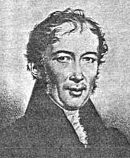
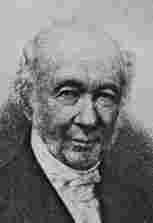
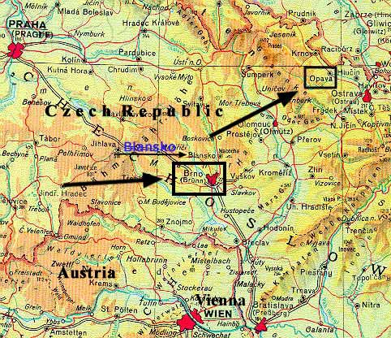
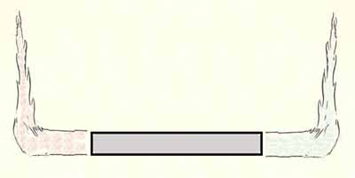

Back to Franz Bardon Research
Diesen Artikel habe ich größtenteils 2002 zuerst in englischer Sprache verfasst und im englischen Teil meiner website veröffentlicht. Erst 2004 habe ich damit begonnen ihn in die deutsche Sprache zu übersetzen. Erweiterungen und Ergänzungen werde ich jetzt in deutscher Sprache hinzufügen; es ist geplant eine englische Gesamtversion später folgen zu lassen.
Inhalt
Einführung
und einige biographischen Notizen zum Leben Reichenbachs.
Die Entdeckung des Od-Phänomens.
Zum Begriff "Od"Der sensitive Mensch
Wer ist sensitiv und wer ist es nicht?
Definition der Sensitivität.
Methoden zum Auffinden von sensitiven Menschen.
Reichenbachs bevorzugte Methode zum Austesten der Sensitivität.
Reichenbachs Standard-Test-Fragebogen um herauszufinden, ob jemand sensitiv ist oder nicht.
Die visuelle Wahrnehmung des Ods
Voraussetzungen zur visuellen Wahrnehmung des Ods
Unterschiedliche Gradabstufungen der visuellen Wahrnehmung des Ods1)
2)
3)
4)
5)
6)Die Od-Glut
Die Od-Flamme
Od- Schnüre, Fasern und Flaum
Od-Rauch
Od-Funken
Die Od-Iris bzw. der Od-Regenbogen
Warme & kalte, angenehme & unangenehme und andere Gefühle, die durch Od hervorgerufen werden.
(Ab hier ist der Text leider noch lückenhaft. Ich werde die fehlenden Teile so schnell als möglich ergänzen; ab hier sind nur die blauen, unterstrichenen Einträge Links zu schon fertig gestelltem Text.)
1)
2)
3)
4)
5)
6)
7)
8)
9)
10)
11)
12)
13)
14)
Magnete
Kristalle
Pflanzen
Der menschliche Körper, der tierische Körper
Chemische Reaktionen
Hitze
Reibung
Töne
Induzierter Magnetismus
Elektrizität
Sonnenlicht
Mondlicht
Fließendes Wasser
Die ganze unbelebte Natur
Wichtige Eigenschaften des Ods 1)
2)
3)
4)
5)
6)
a.)
b.)
c.)
7)Die Polarität des Ods
Die Leitung des Ods, die Leitungsgeschwindigkeit von Od
Die Übertragung ("Verladung") von Od = Das Aufladen von Objekten mit Od
Die Interaktion von Od mit dem Magnetfeld der Erde.
Od positive Metalle, Od negative Metalle, durchsichtige Metalle.
Das Od und "pseudo-psychokinetische" Phänomene = Bewegung physikalischer Objekte durch die odische Kraft.
"Psychokinetisches" Kreisen von kreisförmigen Papierscheiben auf der Fingerspitze von Hochsensitiven. (Ein perpetuum mobile? Nein natürlich nicht.)
(Platzhalter)
(Platzhalter)
Das Od als Auslöser für das Phänomen des "Tischrückens" = Bewegung schwerer bzw. massivster physikalischer Objekte durch die gemeinsame, akkumulierte odische Kraft mehrer Menschen.(wird fortgesetzt)
Einführung
und einige biographischen Notizen zum Leben Reichenbachs.
Mit diesem Artikel möchte ich eine Serie von Abhandlungen über Dr. Karl Freiherr von Reichenbachs Forschungen zum Od beginnen. Reichenbachs Untersuchungen auf diesem Gebiet füllen mehr als 2000 Seiten in verschiedenen von ihm selbst veröffentlichten Büchern; Reichenbach unternahm buchstäblich tausende Experimente um die Natur und Eigenschaften der von ihm entdeckten odischen Kraft zu untersuchen. Leider gibt es nur sehr wenig ernstzunehmende Sekundärliteratur zu diesem Thema, ich habe mich deshalb dazu entschlossen, die wichtigsten Entdeckungen Reichenbachs zusammenzufassen und teilweise auch zu kommentieren.
Reichenbachs Entdeckungen sind von unglaublicher Tragweite und ihre Wichtigkeit und Relevanz kann gar nicht überbewertet werden. Nach einem sehr eingehenden und genauen Studium der Veröffentlichungen Reichenbachs scheint es mir mehr als unwahrscheinlich zu sein, dass es sich dabei um reine Erfindung oder Betrug handelt. Für mich ist es vollkommen unverständlich, dass dieser Wissensschatz vollkommen brach liegt und unbenutzt ein kümmerliches Dasein in einem vergessenen Winkel der Wissenschaftsgeschichte fristet. Es wird Zeit, dass dieser Goldschatz an das Licht gehoben wird - oder, als Katzengold entlarvt, endgültig dem Vergessen in den großen Archiven der Menschheit anheim gegeben wird.
Reichenbach (1788-1869) war einer der führenden Wissenschaftler seiner Zeit und seine Forschungen zu Nebenprodukten des Erdöls machten Chemiekonzerne wie Hoechst, Bayer und andere überhaupt erst möglich.


Dr. Karl Freiherr von Reichenbach
(1788-1869)Als junger Student an der Universität von Tübingen entschloss sich Reichenbach in einem Akt der trotzigen Auflehnung gegen die konservativen Kräfte seiner Zeit mit einigen Freunden nach Tahiti auszuwandern. Der reaktionäre Zeitgeist im damaligen Mitteleuropa war für die leuchtende Intelligenz eines jungen Reichenbach einfach nicht zu ertragen. Er gründete eine Gesellschaft zur Emigration nach Tahiti: aber das Gründungsmanifest dieser Gesellschaft enthielt einige kritische Bemerkung über die königliche Familie. Das Dokument zirkulierte zuerst nur im Untergrund, wurde dann aber bekannt und schließlich von der Presse aufgegriffen. Damit war der Skandal perfekt. In der öffentlichen Meinung, wie sie von den Zeitungen wiedergegeben wurde, handelte es sich um einen Akt des Anarchismus, und Reichenbach wurde mit 14 anderen Mitgliedern seiner "Gesellschaft" wegen Hochverrats festgenommen. Reichenbach machte eine Eingabe an den König als Hauptverantwortlicher für die ganze Angelegenheit verantwortlich zu sein, mit der Bitte, seine Freunde aus der Haft zu entlassen. Aber es wurde bald klar, dass die ganze Affäre im Grunde ziemlich harmlos war und so entschied der König, dass eine zweimonatige Haftstrafe und eine kleine Geldbuße ausreichend sei, um die Angelegenheit zu bereinigen (die übliche Bestrafung für Hochverrat war die Todesstrafe).
Nach diesem Skandal schloss Reichenbach sein Studium mit dem Titel eines Doktors der Philosophie der Naturwissenschaften ab und heiratet seine Frau Friederike Ehrhard.
Reichenbach wurde in Folge sehr schnell sehr reich und zwar durch die Erfindung eines genialen neuen Ofens zur Herstellung von Holzkohle, die in großen Mengen von der Stahlindustrie gebraucht wurde. Erst Jahrzehnte später wurde ein Verfahren entwickelt um Koks zur Stahlproduktion zu verwenden. Nach dieser Erfindung wurde Reichenbach von einer führenden Stahlproduktionsfirma eingeladen, als Fabrikdirektor die Stahlwerke in Blansko, einige Kilometer außerhalb von Brno (Brünn in der heutigen Tschechischen Republik, die Stadt in der etwa zur gleichen Zeit der Augustiner Mönch Gregor Mendel seine revolutionären Versuche zur Genetik durchführte) zu leiten.

Reichenbach war so erfolgreich, dass dieses Stahlwerk zum größten der damaligen Österreichisch-Ungarischen Monarchie aufstieg.
Neben seiner anspruchsvollen Aufgabe als Fabrikdirektor des Stahlwerks war Reichenbach sehr beschäftigt mit seinen Experimenten auf dem Gebiet der Chemie. Seine Forschungen auf verschiedenen Gebieten der Naturwissenschaft füllen viele tausend Seiten an Veröffentlichungen. (Seine persönlichen Notizen gingen leider verloren.) Ich möchte hier nur zwei Beispiele seiner Entdeckungen anführen, von denen es hunderte gibt; die Aufarbeitung dieses Materials ist Aufgabe der Chemiegeschichte und der Geschichte der Naturwissenschaften.
[Möglicherweise ist Reichenbach auch der Entdecker des Benzins, da er im Jahre 1864 darauf hinweist, dass das von ihm im Jahre 1831 entdeckte "Eupion" mit dem später als "Benzin" bezeichneten Stoff identisch ist; jedenfalls wird es sicherlich jeden Fachmann (Chemiker) erstaunen, dass Reichenbach den Begriff "Paraffine" geprägt hat, die man heute meist Alkane nennt (siehe Abschnitt I.1. Hans Beyer, Lehrbuch der organischen Chemie, Hirzel Verlag - Stuttgart), dass er also legitimerweise als der Entdecker einer ganzen Hauptgruppe der Kohlenwasserstoffe anzusehen ist. Die Relevanz dieser Entdeckung kann nur vom ausgebildeten Chemiker/Pharmazeuten richtig eingeschätzt und gewürdigt werden. Weiters kann man Reichenbach als den Begründer der Petrochemie und der Farbenchemie ansehen! Wer glaubt, dass ich hier übertreibe, der sollte diesen Angaben mit Hilfe der heute zugänglichen Literatur über Reichenbach nachgehen und sich selbst ein genaues Bild machen.]
Für die Stahlproduktion wurden große Mengen von Holzkohle benötigt. Bei der Herstellung dieser Holzkohle, für die sich Reichenbach ein besonderes Verfahren ausgedacht hatte, entstanden als Nebenprodukt große Mengen von Teer, für den es damals keine Verwendung gab und der als Abfallprodukt einfach weggekippt wurde.
Reichenbach begann nun mit chemischen Experimenten um irgendwelche nützlichen Stoffe im Teer zu finden, damit der Teer nicht ungenutzt einfach nur als Abfall entsorgt werden musste. Man sieht also, dass Reichenbach ein im höchsten Maß moderner Mensch war, auch wenn man heutige Maßstäbe anlegt: er dachte schon damals durch und durch ökologisch.
Und er hatte mit seinen Forschungen Erfolg, er fand zum Beispiel das Paraffin im Teer, aus dem sich Kerzen herstellen ließen. Ein höchst erstaunliches Ergebnis : ein vollkommen weißer Stoff aus einem schwarzen, klebrigen und unappetitlich-grauslichem Zeug. Wäre ich Esoteriker würde ich sagen, dass Reichenbach auch aus der größten Dunkelheit noch Licht zu machen in der Lage war; welch eine grandiose Leistung!
Weiters entdeckte er als zweites Beispiel das Kreosot, auch wiederum im Teer. Er fand heraus, dass diese Substanz ausgezeichnete antiseptische (= desinfizierende) Eigenschaften besitzt. Nach der Publikation dieser und zahlreicher anderer Entdeckungen in "Liebigs Annalen der Chemie", eine der führenden wissenschaftlichen Zeitschriften des 19. Jahrhunderts wurde Lister, ein wissenschaftlicher Pionier und Arzt in Schottland auf dieses Ergebnis aufmerksam und begann Wundinfektionen mit Kreosot zu behandeln.
(Für den Fachmann: auf diesen "Lister" ist der Gattungsname einer bekannten Bakteriengattung zurückzuführen, i.e. die Gattung "Listeria".)
Zu dieser Zeit starben sehr viele Menschen an trivialen Wundinfektionen durch eine sog. "Blutvergiftung" (generalisierte Bakteriämie). Durch eine Desinfektion der Wunde mit Kreosot konnte eine Wundinfektion in den allermeisten Fällen verhindert werden. Durch die Forschungen Reichenbachs konnte das Leben tausender Menschen gerettet werden.
Interessant ist, dass sogar ein Teil der Forschungen Reichenbachs über das Od in "Liebigs Annalen der Chemie" veröffentlicht wurden (dies wird den Fachmann, Chemiker erstaunen), bis Liebig vom Vitalismus zum Strukturalismus überwechselte. (Zum Kampf Vitalismus/Strukturalismus mehr im Aufsatz Weltbild.) Damals fand Liebig, dass Reichenbachs Forschungen zum Od zu sehr dem Spiritismus und Okkultismus nahe stehen würden, obwohl Reichenbach sich heftig gegen diesen Vorwurf wehrte, und Liebig und andere Kritiker zu überzeugen suchte, dass er sich bei seinen Forschungen ausschließlich streng wissenschaftlicher Methoden bedient habe.
Reichenbachs Untersuchungen wurden darauf hin von einer "unabhängigen" Kommission von Ärzten in Abwesenheit von Reichenbach geprüft. Diese Kommission machte alle Fehler, die man bei einer Untersuchung des Ods nur machen kann (mehr dazu weiter unten). Erwartungsgemäß konnten die Ergebnisse Reichenbachs von dieser "unabhängigen" Ärztekommission nicht bestätigt werden, wodurch Reichenbach erst recht als unseriöser Wissenschaftler gebrandmarkt wurde und ganz Wien bzw. die ganze deutschsprachige Fachpresse über Reichenbach lachte und sich spöttisch über ihn lustig machte.
Liebig war durch seine im In- und Ausland hochangesehene wissenschaftliche Zeitschrift ein mächtiger und wegen seiner zum Teil sehr zynischen und verletzenden Kommentare auch gefürchteter Mann. Er machte nun in aller Öffentlichkeit Reichenbachs Forschungsergebnisse zum Od lächerlich und stellte ihn auf eine Stufe mit Hellsehern, Kartenlegern und Jahrmarkts-Fakiren. Damit war Reichenbachs Ruf als Wissenschaftler ein für allemal ruiniert, dies war ein Schlag für Reichenbach, von dem er sich nie wieder erholen sollte.
Aber ich darf hier nicht vorgreifen, soweit sind wir noch nicht, diese negative Entwicklung sollte erst Jahre später eintreten. Als Fabrikdirektor war Reichenbach in seinem Element und erreichte in diesen Jahren wahrscheinlich den Höhepunkt seiner öffentlichen Karriere als "Wirtschaftsboss" und als ein in ganz Europa bekannter und angesehener Wissenschaftler.
Reichenbach war ein äußerst vielseitiger Mann und er interessierte sich für zahlreiche unterschiedliche Gebiete der Wissenschaft. Er war zum Beispiel sehr an Meteoriten interessiert und begann deshalb Meteoriten aus der ganzen Welt zu sammeln und zu klassifizieren. Seine Meteoritensammlung, heute im Besitz einer öffentlichen Institution, ist immer noch die größte der Welt. (Was ich aber nicht selbst überprüft habe, es könnte sich auch um eine Übertreibung handeln.)
Einige Jahre später starb der Besitzer des Stahlwerkes der Reichenbach nach Blansko geholt hatte und sein Sohn versuchte Reichenbach loszuwerden, um selbst die ganze Macht über das Werk zu übernehmen, besonders aber auch um das in hoher Blüte stehende Stahlwerk, an dem Reichenbach eigentlich eine Beteiligung besaß, zur Gänze in seinen Besitz zu bringen. Es ging also um Geld und Macht.
Man begann Reichenbach für irgendwelche Fehler verantwortlich zu machen, die nicht einmal in seinem Zuständigkeitsbereich lagen und zeigte sich immer unzufriedener mit seiner Führung des Werks. Reichenbach war nicht dumm und bemerkte, dass man ihn mit unlauteren Mitteln aus seiner Position drängen wollte und zwar auf eine Art, die möglichst viel des Reichtums, der Reichenbach vertraglich zustand, beim Haupteigentümer beließ.
Reichenbach versuchte zunächst längere Zeit, die Angelegenheit auf gütliche Art zu regeln. Später musste er zur Kenntnis nehmen, dass auf diese Weise nichts zu erreichen war und sah sich gezwungen, die ihm zustehenden Rechte in einem Gerichtsverfahren geltend zu machen.
Im Prozess wurde Reichenbach Recht gegeben und der Besitzer des Stahlwerkes musste in einem Vergleich eine außerordentlich hohe Summe an Reichenbach zahlen. Mit diesem Vermögen kehrte Reichenbach als reicher Mann nach Wien zurück und kaufte sich auf dem Hausberg Wiens, dem Cobenzl, ein Schloss, in dem er dann auch die meisten seiner Versuche zum Od durchführte.
Schloss Cobenzl, Reichenbachs Residenz
(eigentlich Schloss Reisenberg)
Für uns ist Reichenbachs Reichtum nur in einer Hinsicht wichtig: er hatte die nahezu unbeschränkten Eigenmittel um seine tausende Experimente zu finanzieren, die sicherlich ein Vermögen kosteten. Weiters war er in der Lage, seine umfangreichen Forschungsergebnisse selbst zu publizieren, sonst hätten wir möglicherweise niemals von ihnen erfahren.
Für mich ist einer der am meisten anziehende Punkte an den Forschungen Reichenbachs, dass er kein Okkultist, sondern ein reiner Naturwissenschaftler war. Seine Forschungsergebnisse basieren strikt auf dem westlichen naturwissenschaftlichen Weltbild und sind aus diesem Grund von höchster Relevanz und Vertrauenswürdigkeit. Dass Reichenbach die naturwissenschaftliche Methode beherrschte, hatte er zur Genüge durch seine Erfolge auf anderen naturwissenschaftlichen Forschungsgebieten bewiesen.
Dass es sich sogar um einen Meister seines Fachs handelte, der seiner Zeit weit voraus war kann nur von uns selbst bewiesen und bestätigt werden. Nur wenn es uns gelingt, Reichenbachs Forschungsergebnisse zu verifizieren und Anwendungen dieser Forschungsergebnisse zu finden, die für alle Menschen nützlich sind, können wir dieses Ziel erreichen.
Die Verifikation ist nach Aussagen von Reichenbach sehr leicht, auch wenn die Untersuchungen des Ods seine Tücken hat. Anwendungen müssten sehr leicht zu finden sein, falls es sich wirklich um eine wirkende, objektive Kraft handelt, wie von Reichenbach immer wieder aufs Neue an vielen Stellen seiner Werke behauptet ...
Zum Begriff "Od": Reichenbach nannte die neue Kraft, die er entdeckt hatte "Od". Od bedeutet eine Kraft die Alles durchdringt und durchflutet. Er erklärt, dass Odin oder Wodan die Götter der nordischen Mythologie sind, die eine Alles durchflutende Kraft symbolisieren.
Durch Zufall habe ich herausgefunden, dass in der tibetanischen Sprache das Wort "Od" eine Bezeichnung für Licht ist! In der tibetanischen Sprache gibt es zwei Bezeichnungen für "Licht". Normalerweise wird Licht durch den Ausdruck "sangs po" bezeichnet. Ein weniger gebräuchlicher Ausdruck für Licht ist das tibetanische Wort "Od". Ich glaube nicht, dass Reichenbach von dieser Tatsache gewusst hat, sonst hätte er es mit größter Wahrscheinlichkeit in seinen Werken erwähnt.
Es handelt sich also wahrscheinlich um einen erstaunlichen Zufall. Andererseits ist es sehr wohl möglich, dass es eine gemeinsame linguistische Wurzel für die Götternamen Odin und Wodan und dem tibetanischen Begriff für Licht "Od" gibt, dass also diese Begriffe linguistisch verwandt sind.
Die Entdeckung des Od-Phänomens
Reichenbach entdeckte das Od-Phänomen durch Zufall: ein Dame erzählte ihm, dass sie eine Person mit der Fähigkeit kenne, in einem abgedunkelten Raum eigenartige Farben aus einem Magneten austreten zu sehen, obwohl sonst niemand etwas wahrnimmt. Reichenbach besuchte diese Person und war fasziniert von dieser Fähigkeit und nach einigen Versuchen erkannte sein klarer Geist sofort, dass er hier etwas sehr Wichtigem auf der Spur war.
Er fand heraus, dass "sensitive" Personen sehen können, wie ein eigenartiger Stoff, ein unbekanntes Medium oder Fluidum aus einem Magneten entweicht. An dem einen Pol ist dieses Fluidum/Stoff rot gefärbt, am anderen Pol tritt es mit schwach blauer Farbe aus. Außerdem sehen solche Menschen den ganzen Magneten in einem schwachen Leuchten glühen. [Ich benutze hier nach der Terminologie Reichenbachs den Begriff "sensitiv" um Menschen zu bezeichnen, die die Fähigkeit besitzen, im Dunkeln diese Lichterscheinungen wahrzunehmen. Man sollte "sensitiv" nicht mit "sensibel" verwechseln, "sensitiv" beinhaltet keine charakterliche Wertung oder Einteilung.]
Reichenbach fand bald heraus, dass auch Kristalle dieselbe eigenartige Kraft emanieren. Darauf entdeckte er nach und nach, dass dieselbe Kraft auch von elektrischen Strömen und durch magnetische Induktion produziert wird, dass sie im Sonnen- und im Mondlicht enthalten ist, dass sie bei chemischen Reaktionen entsteht, außerdem auch durch Wärme, durch Reibung, durch Töne und schließlich dass jedes lebende Wesen Quelle dieser Kraft ist. Ein menschliches Wesen ist eine starke Quelle der odischen Kraft. Schließlich entdeckte er, dass buchstäblich ALLES, JEDES BELIEBIGE DING Od emaniert, ob es sich nun um ein lebloses, anorganisches Objekt oder um ein Lebewesen handelt. Reichenbach entdeckte, dass das Od einige Eigenschaften besitzt, wie wir sie von der Elektrizität und vom Magnetismus kennen. So zum Beispiel besitzt das Od eine Polarität, es gibt zwei Pole der odischen Kraft, den + Pol (Pluspol) und den - Pol (Minuspol). Bestimmte sensitive Personen nehmen die zwei unterschiedlichen Pole des Ods als zwei unterschiedliche Farben wahr: rot und blau.
Wir müssen jedes einzelne dieser Ergebnisse genau untersuchen und diskutieren. Aber bevor ich beginne die weiten Verzweigungen dieses Wissens hier darzustellen, sollte ich zuerst das verwendete "Instrument" zur Untersuchung der odischen Kraft mit einigen Worten näher charakterisieren, nämlich die "sensitive Person". Damit betreten wir ein schwieriges Gebiet in Bezug auf die etablierte Wissenschaft: wir können kein Mikroskop, Voltmeter oder ein ähnliches Gerät zur Untersuchung der odischen Kraft benutzen sondern wir müssen uns bei unseren Experimenten mit den Wahrnehmungen spezieller Menschen begnügen, die ein spezielles Talent besitzen: die Sensitivität. Damit handeln wir uns bei unseren Experimenten, die nach gängigem Wissenschaftsverständnis möglichst objektiv sein sollten, ein gewisses Maß an Subjektivität ein. Mit dieser Subjektivität handeln wir uns gleichzeitig sofort ein gewisses Misstrauen der etablierten Wissenschaft ein, mit dem man aber umgehen kann. Psychologische Untersuchungen stehen vor demselben Problem und auch die Medizin hat mit der Schwierigkeit zu kämpfen, dass man ihr immer wieder den Rang als klassische objektivierbare Wissenschaft auf bestimmten Gebieten abspricht. (Placeboforschung, Medikamentewirkung, usw.)
Sensitive Personen nehmen die odische Kraft zum Teil sehr unterschiedlich wahr. Einige können sie nur fühlen, einige sehen sie als gefärbtes Medium, wieder andere sehen nur ein graugefärbtes Schimmern im Dunkeln, und so weiter.
Wissenschaftler versagten bisher völlig bei der Aufgabe Reichenbachs Ergebnisse zu duplizieren oder zu verifizieren, weil sie die vollkommen andersartige Natur der Untersuchungsmethode niemals richtig verstanden haben, wenn man mit einem lebenden Menschen als "Untersuchungsinstrument" zu arbeiten hat, im Unterschied zu leblosen Geräten wie etwa einem Mikroskop oder einem Voltmeter. Wenn zum Beispiel der Experimentator zu nahe bei der sensitiven Person steht, dann verliert diese die Fähigkeit die odischen Emanationen wahrzunehmen, da sie durch das odische Feld, das der Experimentator selbst ausstrahlt, gestört wird. Weitere mögliche Fehlerquellen bei der Untersuchung des Ods und bei Experimenten mit odischen Strahlungen werde ich weiter unten anführen.
Eigentlich ist es ja triviales Wissen, dass sich der Experimentator und Forscher auf dem Gebiet gut auskennen muss, das er untersuchen will. Würde ein Physiker mit abgeschlossenem Studium, der an einer Provinz-Fachhochschule Schüler auf Abiturniveau in Physik unterrichtet mit einem hochmodernen Quantenexperiment an einer führenden Forschungsinstitution betraut werden, dann wäre er natürlich dramatisch überfordert. Wie kann man dann einige Assistenz-Ärzte Hüpferlinge damit beauftragen, die Forschungsergebnisse eines Reichenbach auf einem unbekannten Forschungsgebiet zu begutachten?
Wissenschaftler sind manchmal ziemlich widerspenstig, wenn es darum geht neue Forschungsergebnisse zu akzeptieren, die nicht Teil ihres Weltbildes sind. Sogar wenn man ihnen einen Zusammenhang unwiderlegbar beweist werden solch "störende" Forschungsergebnisse einfach ignoriert. (In dieser Hinsicht sitzen manche Wissenschaftler fröhlich gemeinsam mit gewissen Esoterikern und Sektenmitgliedern im selben Boot.)
Zum Beispiel wurde vom Wissenschaftspionier und Arzt Dr. Semmelweis in der 2. Hälfte des 19. Jahrhunderts der unwiderlegbare Beweis erbracht, dass sich die Sterblichkeit in der Frauenklinik, Abteilung Geburtshilfe von 30% (= es stirbt jede 3. Frau) auf 2% (= von 100 Frauen sterben "nur" 2) durch eine sehr einfache Maßnahme vermindern lässt, und zwar wenn sich der Arzt nach jeder Untersuchung mit einer antiseptischen Flüssigkeit die Hände wäscht. In Wahrheit waren die Ärzte selbst für die hohe Sterblichkeit der Frauen verantwortlich, weil sie durch die Untersuchung die tödlichen Bakterien von einer Frau auf die nächste übertrugen. Aber die Ärzte machten einfach so weiter wie sie es gewohnt waren (ich bin mir zwar nicht sicher, aber ich glaube sogar an dem Krankenhaus, an dem Semmelweis tätig war). Semmelweis trug einen heroischen Kampf mit seinen Kollegen aus um sie von den Ergebnissen zu überzeugen, hatte aber damit keinen Erfolg. Nach einigen Jahren vergeblichen Bemühens wurde er depressiv, weil er sich natürlich im Klaren darüber war, dass wegen der Widerspenstigkeit der Ärzte zahlreiche Frauen starben und er starb wenig später desillusioniert. Es dauerte Jahrzehnte bis die Ergebnisse von Semmelweis akzeptiert wurden. In Wahrheit wurden die alten Auffassungen einfach durch den Tod ihrer Besitzer ausgemerzt, für die neu ausgebildeten Ärzte waren die Forschungsergebnisse von Semmelweis schon Teil ihrer Ausbildung.
Oder ein anderes Beispiel: Wissenschaftler behaupteten, dass es unmöglich ist, dass ein Flugzeug jemals fliegen kann: Flugzeuge sind schwerer als Luft und deswegen ist es vollkommen unmöglich, dass sie jemals vom Boden abheben werden. Mit solchen Argumenten machten sie sich über die Flugzeugpioniere wie den Gebrüdern Wright und über andere Flugmaschinen-Konstrukteure und deren zahlreichen Versuche, von denen einer nach dem anderen scheiterte, in diversen wissenschaftlichen Fachzeitschriften lustig. Solche "wissenschaftlichen" Abhandlungen wurden sogar in den anerkanntesten wissenschaftlichen Periodicals Nature oder Science (ich kann mich nicht mehr erinnern, welches der zwei es genau war) veröffentlicht.
Nach dieser Argumentation hätten ja auch Vögel nicht fliegen können ...Kehren wir nun zu unserem Hauptthema zurück: dem Od.
Eine der wichtigsten Fragen, die uns gleich am Anfang sehr interessieren wird ist die Frage:
Wer ist eine sensitive Person? Wodurch ist ein sensitiver Mensch gekennzeichnet?
Ohne einen sensitiven Menschen ist (zumindest zurzeit) keine Untersuchung des Ods möglich.Glücklicherweise gibt es nach Reichenbach sehr viele sensitive Menschen unter uns, wir müssen nur in der Lage sein, sie zu finden.
Die sensitive Person
Sehr wichtig ist Reichendbachs Forschungsergebnis, dass 30-50% aller Menschen zumindest in einem gewissen Grad sensitiv sind.
Wenn wir also von einer Gruppe von 500 Personen ausgehen, die sich zum Beispiel für Reichenbach interessieren, dann sind davon ca. 200 bis zu einem gewissen Grad sensitiv, einige davon wahrscheinlich sogar hochsensitiv.
Was bedeutet dies nun genau, was bedeutet es ein sensitiver Mensch zu sein? Wenn ein sensitiver Mensch sich längere Zeit in einem absolut stockdunklen Raum aufhält, in dem ein Magnet oder ein Kristall offen daliegt (beim Betreten des Raums muss natürlich verhindert werden, dass der Sensitive den Magnet oder das Kristall sieht, da man sonst nicht von einem glaubwürdigen Experiment sprechen kann), dann sieht der Sensitive den Magnet bzw. den Kristall nach einer bestimmten Periode des Wartens mehr oder weniger stark leuchten oder glühen, zumindest ganz leicht. Falls jemand ein "guter" Sensitiver ist, dann kann er sehen, wie aus den zwei Polen des Magneten eine Art leuchtender Stoff in den zwei Farben rot und blau austritt. Je sensitiver ein Mensch ist, umso besser und heller kann sie/er diese Lichterscheinungen wahrnehmen.
Wichtig ist in diesem Zusammenhang, dass damit kein veränderter Bewusstseinszustand verbunden ist. Der betreffende Sensitive befindet sich in seinem normalen Alltags-Normalbewusstseinszustand.
Ein Sensitiver ist in der Lage, im absolut abgedunkelten Raum, die genaue Form, Größe und Gestalt des Magneten anzugeben, die genaue Position im Raum, und so weiter. Ein sehr sensitiver Mensch ist nach Reichenbach sogar in der Lage, die Fresken an der Decke oder Einrichtungsgegenstände zu beschreiben, auch wenn er mit verbundenen Augen in den Raum geführt wurde, weil sie durch das "Licht" das der Magnet oder Kristall aussendet beleuchtet werden. Man muss sich klar darüber sein, dass wenn man sich mit einem sensitiven Mensch im gleichen Raum befindet der diese Dinge beschreibt, dass man selbst in absoluter Dunkelheit dasitzt und absolut nichts sieht, falls man nicht selbst auch zumindest ein wenig sensitiv ist.
Je stärker das magnetische Feld eines Magneten ist, umso stärker und größer ist auch das "odische Licht" das von ihm ausgeht, Reichenbach schaffte es meterhohe "odischen Flammen" herzustellen. Dieser Punkt wäre heutzutage besonders interessant weil wir heute Magnete herstellen können, die ein tausendfach stärkeres magnetisches Feld aufweisen wie zur Zeit Reichenbachs. Reichenbach machte seine Versuche zur Od-Emanation der Elektrizität zum Teil noch mit einer Voltaischen Säule, heute ist es ein Leichtes für uns, millionenfach höhere elektrische Felder herzustellen (auch für Laien).
Aber es gibt noch weitere Kriterien als die sichtbare Wahrnehmung des Ods, um jemanden zu testen ob er sensitiv ist oder nicht. Von Wissenschaftlern zur Zeit Reichenbachs wurde es bezweifelt, dass es überhaupt solche "sensitive" Menschen gibt, geschweige denn, dass man solche wirklich finden kann. In einem Versuch, seine Kollegen zu überzeugen, schrieb Reichenbach deshalb extra ein kleines Büchlein mit dem Titel: "Wer ist sensitiv und wer nicht". Darin kritisierte er seine Kollegen auf das schärfste, die sich nicht in der Lage sahen, einen sensitiven Menschen zu finden mit dem sie seine Forschungsergebnisse hätten bestätigen können. Mit Hilfe der in dieser kleinen Schrift enthaltenen Auflistung sollte es für jedermann ganz leicht sein, einen sensitiven Menschen in seiner Nachbarschaft zu finden. In ihr werden 140 verschiedene Arten beschrieben, wie man einen sensitiven Menschen erkennen und finden kann und Reichenbach betonte, dass es sich dabei nur um eine "kleine Auswahl" von Möglichkeiten handelt. Er führt in dieser Schrift an, dass es ein Leichtes ist innerhalb weniger Tage oder Wochen sogar hunderte von sensitiven Personen in jeder Stadt, in jedem Land, an jedem Ort der Welt, an dem sich Menschen aufhalten zu finden. Er erwartete, dass zumindest einige seiner Kollegen mit Hilfe der Anleitung versuchen würden, einen sensitiven Menschen zu finden. Reichenbach irrte sich natürlich, kein Kollege kümmerte sich um die Publikationen Reichenbachs, was diesen immens frustrierte und enttäuschte.
Im Folgenden werde ich die wichtigsten Methoden zusammenfassen, mit denen sich sensitive von nichtsensitiven Personen unterscheiden und abgrenzen lassen.
Sensitive Personen haben meist eine Vorliebe für bestimmte Farben. Fast immer verabscheuen sie die Farbe gelb, und zwar sowohl in ihrer reinen Form als auch in ihren verschiedenen Abstufungen (von ocker oder rötlichgelb bis grüngelb) und bevorzugen extrem die Farbe blau.
Sensitive Menschen halten es nicht aus, sehr nahe bei anderen Menschen zu stehen. Der Grund dafür ist, dass sie die odische Strahlung, die von jedem Menschen ausgeht und die bei jedem Menschen mehr oder weniger relativ intensiv ist, sehr stark wahrnehmen. Wenn dabei die Polarität falsch ist, dann wird einem sensitiven Menschen sogar innerhalb kürzester Zeit übel was bis zur Ohnmacht führen kann. Aber auch wenn die Polarität richtig ist, bekommen ein Hochsensitiver nach einiger Zeit Schwierigkeiten, weil es in einer Körperhälfte zu einem Austausch - Ausgleich der odischen Kräfte kommt, in der anderen Körperhälfte aber nicht, was zu einem Ungleichgewicht führt, das wiederum zu Krämpfen, Bauch- oder Kopfschmerzen, zu halbseitiger Körpertaubheit oder zu Übelkeit oder anderen unangenehmen Zuständen führten kann.
Sensitive Personen können sehr gestresst reagieren, wenn sie gezwungen sind, sich mit mehreren anderen Personen gleichzeitig in einem sehr kleinen Raum aufzuhalten, wie zum Beispiel dem Abteil eines Zugs oder in einem Auto. Falls sie nicht in der Lage sind, solch einer misslichen Situation auszuweichen, dann müssen sie alsbald die Fenster öffnen, auch wenn die Außentemperatur unerträglich kalt ist. Der Grund dafür ist, dass das Od, das von den Menschen abgestrahlt wird, sich als erstes auf die Raumluft überträgt, in der sich die Menschen aufhalten. Halten sich mehrere Menschen in einem kleinen Raum auf, dann steigt die "Ladung" der Raumluft durch das Od der Menschen auf einen für den sensitiven Menschen nicht mehr ertragbaren Wert an. Wird die Luft nicht auf irgendeine Weise aus dem Raum entfernt, dann wird der sensitive Mensch irgendwann ohnmächtig oder er bekommt Krämpfe am ganzen Körper oder muss sich erbrechen.
Aus dem gleichen Grund ist es auch für (hoch)sensitive Personen fast unmöglich, mit ihrem (Ehe-)Partner im gleichen Bett zu schlafen. Die Od-Emanation des Partners ist einfach zu störend. Dies kann in einer Partnerschaft zu Problemen führen, besonders wenn keiner der Partner vom Grund des Problems auch nur die geringste Ahnung hat, was natürlich im Allgemeinen der Fall sein wird. Wie ein Partner reagiert, dem man erklärt: "Mir wird speiübel, wenn du neben mir liegst." kann sich jeder selbst lebhaft ausmalen.
Sensitive Menschen müssen um einschlafen zu können, auf ihrer rechten Körperseite liegen. Es ist ihnen vollkommen unmöglich auf der linken Körperseite liegend einzuschlafen. Kennt man den Grund dafür nicht, dann würde man solche und ähnliche Verhaltensweisen natürlich als Marotten abtun. Der Grund dafür ist, dass der Erdboden dieselbe Od-Polarität aufweist, wie die linke Körperhälfte des Menschen. Nur wenn die rechte Körperhälfte des Menschen zur umgekehrt polarisierten Od-Emanation der Erde zeigt, und die gegenteiligen Odpolaritäten harmonieren, findet ein sensitiver Mensch die nötige Ruhe, um einschlafen zu können. Dies stimmt nach Reichenbach allerdings nur für die Nordhalbkugel der Erde. Auf der Südhalbkugel, also zum Beispiel in Chile, Südafrika, Australien, Neuseeland dreht sich dieses Verhältnis um, sodass dort ein sensitiver Mensch nur auf der linken Körperhälfte einschlafen kann. Im Zeitalter von Düsenjets und Billigst-Fernreisen müsste sich auch dieses Phänomen sehr leicht nachprüfen lassen.
Ein ähnliches Phänomen ist es, dass sensitive Menschen sehr sensibel auf das allgemeine Magnetfeld der Erde reagieren, das mit der odischen Anatomie des menschlichen Körpers interagiert. Sensitive Menschen müssen mit ihrem Kopf in Richtung des magnetischen Nordpols der Erde liegen. Tun sie das nicht, dann kommt es bei ihnen zu einer Reihe von unterschiedlichsten unangenehmen Folgen wie Kopf- und/oder Bauchschmerzen, Krämpfe, Schlaflosigkeit, usw. Der Grund dafür ist, dass der Kopf genauso wie die rechte Körperhälfte Od-negativ gepolt ist.
Der größte Unterschied in der odischen Anatomie beim Menschen ist nach Reichenbach in der gegensätzlichen Polarisierung der rechten und linken Körperhälfte zu finden. Die rechte Körperhälfte ist odnegativ polarisiert (blau), die linke Körperhälfte odpositiv (rot). Es gibt diesbezüglich keinen Unterschied zwischen Männer und Frauen, oder zwischen Rechts- und Linkshändern.
(Womit ein weiterer Kapitalfehler Bardons aufgedeckt wäre, der die Polarität der Körperhälften genau umgekehrt angibt und der Meinung ist, dass es bei Linkshändern genau umgekehrt sein müsse wie bei Rechtshändern.)Die folgende Methode ist recht interessant, bezieht sie sich doch nach Reichenbach auf die unterschiedliche Polarisierung der beiden Augäpfel in Bezug auf das Od. Sensitiven Personen wird übel, wenn sie zulange in das Auge mit der "falschen" Polarität einer anderen Person blicken. Die Augen folgen nach Reichenbach in ihrer odischen Polarisierung dem generellen Körperschema wie oben dargestellt. Das rechte Auge ist somit odnegativ polarisiert, das linke Auge odpositiv. Schließt eine sensitive Person eines der Augen, sagen wir mal das rechte Auge und blickt mit dem anderen Auge, also dem linken Auge in das Auge mit der gegensätzlichen Polarität der anderen Person, also bei unserem Beispiel in das rechte Auge des Gegenübers, dann ist alles in Ordnung und es gibt keine Probleme. Blickt sie aber in das Auge mit der gleichen Polarität, also bei unserem Beispiel mit dem linken Auge in das linke Auge des anderen Menschen, dann wird das Auge der sensitiven Person sehr schnell matt, stumpf und beginnt sofort müde zu wirken und die sensitive Person wird beginnen, sich über das Experiment zu beschweren. Hochsensitive Personen werden nach Reichenbach für kurze Zeit blind auf diesem Auge, so stark ist der Effekt.
Bei einer weiteren, sehr interessanten Methode wird ein Hühnerei verwendet. Man legt ein Ei in die Hand der zu testenden Person und fragt sie, ob sie einen Unterschied in der Temperatur zwischen den beiden Enden des Eies fühlen kann. Eine insensitive Person wird keinen Unterschied bemerken oder feststellen können. Ein einigermaßen sensitiver Mensch fühlt sofort, dass sich eine Seite des Eies warm anfühlt, die andere Seite hingegen kalt. Die Spitze des Eies fühlt sich für einen Sensitiven kalt, das Hinterteil warm an. Der Nachteil dieser Methode ist, dass auch jemand, der nur vorgibt etwas zu fühlen, in der Hälfte der Fälle richtig raten wird, da die Wahrscheinlichkeit für einen zufälligen Treffer 50:50 ist. Besser ist es, man sagt also gar nichts über die Temperatur und fragt einfach nur danach, ob irgendein Unterschied gefühlt werden kann. Auch in diesem Fall bleibt immer noch die Möglichkeit einer unbewussten Beeinflussung durch Körpersprache, Stimmlage, usw., man muss also sehr intelligent vorgehen um Betrug und Selbstbetrug auszuschließen. Am besten verwendet man mehrere verschiedene Methoden.
Ich könnte jetzt weitermachen und Methode über Methode beschreiben: alle sind sie wirklich sehr interessant und inspirierend. Ich werde die interessantesten in einem update der Abhandlung später hinzufügen. Es ist auch eine gute Idee sich das Büchlein "Wer ist sensitiv und wer nicht" zu besorgen, solange ich noch keine Gratisversion zum runterladen zur Verfügung stelle.
Reichenbach selbst benutzte meist seine sehr einfache und schnell durchzuführende Lieblings-Testmethode um herauszufinden, ob jemand sensitiv ist oder nicht. Damit der Leser versteht nach welchem Prinzip diese Methode funktioniert, muss ich hier zunächst einige wichtige Punkte zur menschlichen Od-Anatomie in Bezug auf die Polarität des Odes im menschlichen Körper anführen.
Nach Reichenbach ist der menschliche Körper durch verschiedene Achsen bezüglich des Odes in unterschiedliche Bereiche mit unterschiedlicher Polarität aufgeteilt. Die wichtigste Achse verläuft genau in der Mitte des Körpers von oben (Kopf) bis ganz nach unten, wo die Füße den Boden berühren und teilt den Körper wie schon weiter oben beschrieben, in eine linke und eine rechte Körperhälfte mit gegensätzlicher Od-Polarität auf. Die ganze rechte Körperhälfte ist odpolar negativ (Emanation von blauem Od), die ganze linke Körperhälfte odpolar positiv (Emanation von rot bis rötlich-gelbem Od). Das Od wirkt dabei umso stärker, je weiter es von der Körpermitte entfernt ist: die stärksten "Pole" des menschlichen Körpers sind deshalb die rechte und die linke Hand, insbesondere die Fingerspitzen, bzw. der rechte und linke Fuß. Die Polarisierung der rechten und linken Hand entspricht den zwei Polen eines Magneten.
(Die odischen Pole werden zwar auch durch ein Magnetfeld erzeugt, das Od entspricht aber nicht dem magnetischen Feld, sondern es handelt sich beim Od um eine eigenständige Kraft, die von der magnetischen Kraft durch teilweise vollkommen andere Eigenschaften deutlich unterschieden werden kann. Dies sollte man sich gut merken, sonst kann es passieren, dass man in veraltete Begriffe wie dem "tierischen Magnetismus" zurückfällt.)Berührt jemand mit seiner Hand oder mit seinem Zeigefinger die Hand einer sensitiven Person, dann fühlt diese sofort, ob die Berührung durch die gleiche oder die gegensätzliche Polarität der fremden Hand stattfindet. Wird die rechte Hand des sensitiven Menschen mit der eigenen rechten Hand berührt, dann wird dabei in der sensitiven Person ein unangenehmes Gefühl in ihrer Hand ausgelöst, das sich bei einer längeren Berührung von der Hand bis in den Unterarm, später sogar bis in den Oberarm fortpflanzen kann, um bei sehr sensitiven Personen oder einer langen Berührung sogar den Kopf zu erreichen, was schließlich Kopfschmerzen zur Folge haben kann. Wird die rechte Hand des sensitiven Menschen dagegen mit der linken Hand berührt, oder mit dem linken Zeigefinger, dann verspürt er ein angenehmes Gefühl.
Dieses Phänomen lässt sich sehr gut mit den zwei Polen eines Magneten vergleichen. Werden zwei Pole mit derselben Polarität einander angenähert, dann stoßen sie sich gegenseitig ab, werden Pole mit der gegensätzlichen Polarität aneinander angenähert, dann ziehen sie sich an. Je sensitiver die entsprechende Person ist, umso stärker empfindet sie die jeweiligen angenehmen bzw. unangenehmen Gefühle. Übrigens ist für dieses Phänomen keineswegs ein direkter Körperkontakt notwendig. Sensitive Menschen reagieren genau auf dieselbe Weise, auch wenn zwischen den beiden Händen ein leichter Abstand von ein bis zwei Zentimetern besteht.
Reichenbachs Untersuchungen zum Od des menschlichen Körper füllen mehr als 1400 Seiten seiner Bücher, ich muss also später diese Diskussion wieder aufnehmen und vertiefen.
Mit den oben beschrieben Wissen kann man jetzt Reichenbachs bevorzugte Methode zum schnellen und sicheren Testen einer Person gut verstehen:
Reichenbachs bevorzugte Methode
Man kann dazu seine rechte Hand oder auch nur den Zeigefinger der rechten Hand verwenden, der wie schon oben angedeutet, durch seine periphere Körperstellung einer der stärksten Pole bzw. Quellen von Od im menschlichen Körper ist. Die Testperson streckt nun ihre linke Hand aus und man fährt mit der eigenen (rechten) Hand oder Zeigefinger von den Fingerspitzen der Testperson zur Handinnenfläche hinab, wobei es nicht notwendig ist, die Testperson direkt zu berühren. Diese Bewegung sollte nicht zu schnell oder zu langsam erfolgen. Falls die Person sensitiv ist, wird sie ein mehr oder weniger starkes angenehmes Gefühl wahrnehmen. Eine insensitive Person fühlt hingegen absolut gar nichts. Den Test kann man nun mit der rechten Hand der Testperson wiederholen, wobei ein sensitiver Mensch nun von einem unangenehmen Gefühl sprechen wird.
Dies ist eine großartige und sehr einfache, schnell und leicht durchzuführende Methode um herauszufinden, ob eine Person sensitiv ist oder nicht. Je stärker die involvierten Gefühle sind, umso sensitiver ist die entsprechende Person.
Diese Technik wird übrigens als der "Strich über die Hand" bezeichnet. "Der Strich" kann auch über jedes andere Körperteil ausgeführt werden, oder sogar über den ganzen Körper. Dabei ergeben sich große Unterschiede, ob man den Strich von der Spitze zur Basis, oder in Gegenrichtung von der Basis zur Spitze des jeweiligen Körperteils ausführt. Über das Ausführen des "Strichs" werde ich später noch eingehend berichten müssen, da sich der Strich bei sensitiven Personen sehr gut dazu eignet, ihre Leiden, die durch eine Überempfindlichkeit auf das überall vorhandenen Od ausgelöst werden, oft augenblicklich zum Abklingen zu bringen.
Reichenbachs Standard-Test-Fragebogen um herauszufinden, ob jemand sensitiv ist oder nicht.
Reichenbach gibt eine Liste mit 15 Methoden oder Fragen an, die als eine Art Standard dazu dienen kann, mit großer Sicherheit herauszufinden, ob jemand sensitiv ist oder nicht.
1) Wie ist der Schlaf der betreffenden Person, schläft sie ruhig oder unruhig, sind Bett und Bettdecke oft zur Seite geworfen oder liegen sogar am nächsten Morgen am Boden neben dem Bett?
2) Ist die betreffende Person in der Lage, mit einer zweiten Person im selben Bett zu schlafen?
3) Ist die betreffende Person oft in Gesellschaft mit sehr vielen anderen Menschen anzutreffen, im Kino, in Kaffeehäusern, Restaurants, an überfüllten Plätzen, usw. (Kirchen sind auch geeignet)?
4) Kann die betreffende Person einen längeren Händedruck aushalten, ohne unangenehme Gefühle in der Hand zu bekommen? (Hier ist nicht die psychologisch ausgelöste Körperkontakt-Scheu mancher Menschen gemeint.)
5) Besteht ein Unterschied, wenn die Person eine Kupfermünze (z.B. 5 Eurocent) in eine Hand und dann in die andere Hand nimmt?
6) Wird der Person unwohl, wenn sie längere Zeit in einen großen Quecksilber beschichteten Stand-Spiegel schaut? (Anmerkung-1: auch hier geht es wiederum nicht um ein psychisches Gefühl des Unbehagens, das sich bei manchen Menschen aus psychologischen Gründen einstellt, sondern um ein reines Körpergefühl. Anmerkung-2: Ich bin mir nicht sicher, ob heute noch dasselbe Metall oder dieselbe Metall-Legierung verwendet wird wie im 19. Jahrhundert, um die Reflexionsschicht eines Spiegels herzustellen.)
7) Fühlt eine Person einen Unterschied, wenn sie ein Glas Wasser mit eingerührtem Brausepulver in die rechte oder in die linke Hand nimmt? Kann man ein kühles oder eine lauwarmes Gefühl wahrnehmen?
8) Kann man einen Unterschied in der rechten und linken Hand fühlen, wenn man die 10 Finger der Hände an eine (gemauerte!) Zimmerwand legt? Wenn die Person antwortet, dass sie keinen Unterschied fühlt, dann handelt es sich um keine sensitive Person. Eine sensitive Person wird berichten, dass sie in der linken Hand ein kühles und in der rechten Hand ein weniger kühles bis lauwarmes Gefühl wahrnimmt. Da Neubauten sehr oft aus Gussbeton hergestellt werden, muss man sich sicher sein, dass es sich um eine gemauerte Wand handelt. Als Ersatz kann man diesen Test auch mit Kochsalz durchführen, das bei Sensitiven zu denselben Gefühlen führt.
9) Wenn die Testperson ihre Handinnenflächen mit geringem Abstand (1-2 cm) parallel nebeneinander hält, und der Experimentator ganz sachte dazwischen hindurchhaucht, so dass man die Luftbewegung nicht mehr fühlen kann, nimmt die Testperson dann einen Unterschied in der rechten und in der linken Hand wahr, wenn ja, welche Hand fühlt welches Gefühl? Lautet die Antwort nein, dann handelt es sich wiederum um einen Nichtsensitiven. Ein sensitiver Mensch nimmt in der linken Hand ein kühles, in der rechten Hand dagegen ein laues bis lauwarmes Gefühl wahr. Die expirierte Atemluft eines Menschen ist odnegativ geladen.
10) Kann die Testperson in einem Raum ohne Missbehagen schlafen, in dem sich wohlriechende Blumen befinden? Nur nichtsensitive Menschen sind dazu in der Lage, weil nach Reichenbach jeder Blumenduft Ammoniak enthalte, das odpositiv reagiert. Naja, hier hat sich Reichenbach wohl doch etwas zu weit vorgewagt. :-)
11) Fühlt die Testperson "eigenartige" Gefühle, wenn der Experimentator seine Hand über die Hand, den Arm, das Gesicht oder über den ganzen Körper der Testperson gleiten lässt, ohne sie zu berühren? (Strich über einen Körperteil oder über den ganzen Körper.)
12) Besteht ein Unterschied bei der Ausführung des Strichs über einen beliebigen Körperteil in Normal- oder in Gegenrichtung?
13) Bevorzugt die Person eher süßes oder mag sie besonders fette Speisen? Gibt es Vorlieben für saure oder salzige, bittere oder scharfe Nahrungsmittel? Sensitive Personen meiden zumeist fette und süße Nahrungsmittel und haben eine ausgesprochene Vorliebe für saure und scharfe Nahrungsmittel. Gewürze werden meist abgelehnt.
14) Spricht die Person oft im Schlaf oder ist sie sogar ein Schlafwandler? Beides würde für eine sensitive Person sprechen.
15) Mag die Testperson gelbe und orange Blumen? Es ist für viele Sensitive selbst eine erstaunliche Tatsache, dass sie gelbe oder orange Blumen nicht mögen, weil sie keinen Grund für diese Abneigung angeben können.
Sehr interessant ist auch die Behauptung Reichenbachs, dass die Sensitivität von Frauen zur Zeit ihrer Regelblutung sehr stark ansteigt. Der gleiche Effekt wird nach Reichenbach auch von einer Schwangerschaft ausgelöst. Auch aus diesem Grund scheinen Frauen im Allgemeinen durchschnittlich gesehen, etwas sensitiver zu sein als Männer. Noch einmal, mit dem Wort "sensitiv" ist keine Wertung verbunden! Außerdem ist es eher ein Nachteil eine hochsensitive Person zu sein, wenn man von odischen Forschungen einmal absieht, weil man von allerlei Übeln und Unannehmlichkeiten geplagt wird.
Sollten die Forschungsergebnisse Reichenbachs allerdings jemals offiziell anerkannt werden, dann hätten hochsensitive Menschen gut lachen, weil sie mit ihren Fähigkeiten sehr viel Geld verdienen würden. Na, na, na, nur jetzt nicht gleich wieder über neue Betrugsmethoden nachdenken! Es gibt ausgezeichnete Testmethoden, um einen wirklich Hochsensitiven von einem Betrüger zu unterscheiden.
Im Folgenden werde ich einige interessante Phänomene in Bezug auf das Od beschreiben, von denen Reichenbach berichtet. Hier gäbe es so viel anzuführen, dass ich jedes Phänomen nur kurz beschreiben kann um mich erst später eingehender damit zu befassen.
Anmerkung: Übrigens ist davon auszugehen, dass Menschen die Amalgam verplombte Zähne besitzen, grundsätzlich nicht sensitiv sein können, auch wenn sie ohne Metall in ihren Zähnen sensitiv wären. Dazu später mehr in einem Aufsatz über Störungen von Experimenten mit Od, zum Beispiel eben auch durch metallische Gegenstände, die am Körper getragen werden.
Die visuelle Wahrnehmung des Ods
Voraussetzungen zur visuellen Wahrnehmung des OdsSobald man einen ausreichend sensitiven Menschen gefunden hat, kann man damit beginnen, Reichenbachs Experimente zu wiederholen und möglicherweise zu verifizieren. Dazu benötigen wir in erster Linie einen Raum, den man VOLLKOMMEN verdunkeln kann. Dies ist ein sehr wichtiger Punkt. "Normale" Dunkelheit ist leider nicht ausreichend, außer man hat gleich zu Beginn einen hochsensitiven Menschen für seine Experimente zur Verfügung, was aber einen außerordentlichen Glücksfall darstellen würde und besonders zu Beginn im Allgemeinen nicht der Fall sein wird und auch nicht notwendig ist. Wir benötigen also einen Raum, den wir 100%ig abdunkeln können, schon der allerkleinste Anteil auch nur indirekten Lichts, das durch eine winzige Ritze oder einen hauchdünnen Spalt in unseren Raum eindringt, könnte unsere Untersuchungen in dieser Hinsicht gefährden. Anscheinend ist die Energie, die eine visuelle Wahrnehmung beim sensitiven Mensch auslöst so außerordentlich gering, dass sie von Photonen im sichtbaren Bereich des elektromagnetischen Spektrums sofort überlagert wird und somit nicht mehr wahrnehmbar ist.
Ob sich ein normaler Raum eines durchschnittlichen Hauses in Mitteleuropa für diese Versuche überhaupt noch eignet ist sehr fraglich. Auch im Innern der Häuser werden wir ständig von elektromagnetischen Wellen bombardiert, die von Radio- und Fernsehmasten, von Satelliten und von Handymasten ausgestrahlt werden. Die Verkabelung unserer Häuser mit Leitungen, die elektrischen Strom führen, würden unsere Versuche zusätzlich stark stören.
Es bietet sich deshalb hauptsächlich ein unterirdischer Keller als optimaler Platz für unsere Versuche an. Auch Reichenbach führte die meisten seiner Versuche in einem adaptierten Raum seines (Wein?)-Kellers auf Schloss Cobenzl durch. Falls man in der glücklichen Lage ist, ein solches Kellergewölbe für seine Versuche verwenden zu können, dann muss man allerdings sicherstellen, dass von oben nicht der kleinste Lichtstrahl eindringen kann, dass im Keller kein Handyempfang und auch kein Radio-/Fernsehempfang mehr möglich ist und dass er frei von elektrischer Verkabelung ist. Schlimmstenfalls muss man die Wände mit dichtem Maschendraht auskleiden und damit einen Faradayschen Käfig herstellen, der garantiert jede elektromagnetische Welle abschirmt. (Nicht aber die elektromagnetischen Longitudinalwellen würde Tesla jetzt sagen, ..., aber die Qualität einer "Tesla-Ebene" werden wir sowieso nicht erreichen ...)
Der zweite wichtige Faktor für unsere Versuche ist: die Zeit.
Manche sensitive Personen benötigen mehrere Stunden in absoluter Dunkelheit, bevor sie beginnen, das Od-Licht visuell wahrzunehmen. Die jeweils benötigte Zeitspanne hängt vom Grad der Sensitivität ab. Eine sensitive Person mit guten Fähigkeiten benötigt 1-2 Stunden Aufenthalt in vollkommener Dunkelheit, bevor sie beginnt, das Odlicht wahrzunehmen. Eine Person mit eher schwach ausgebildeter Sensitivität wird möglicherweise auch nach 3 Stunden in völliger Dunkelheit noch nichts wahrnehmen, aber es kann gut sein, dass sie nach der vierten Stunde in vollkommener Dunkelheit plötzlich beginnt, die odischen Emanationen in Lichtform wahrzunehmen. Die besten sensitiven Personen sind dagegen sogar in der Lage, das Od noch bei Zwielicht zu erkennen. Daher ist es bei solchen Hochsensitiven nicht notwendig, so großen Wert auf absolute Dunkelheit zu legen, wie oben angedeutet. In einem dunklen Raum nehmen diese Hochsensitiven das Odlicht ohne Wartezeit sofort deutlich wahr. Eine unsensitive Person hingegen kann absolut gar nichts wahrnehmen, auch nach tagelangem Aufenthalt in stockdunkler Umgebung. Reichenbach selbst gehörte zu dieser Kategorie der vollkommen unsensitiven Menschen. Interessanterweise teilten ihm verschiedene sensitive Personen mit, dass er selbst eine starke Quelle odischer Kraft sei. Er wurde als Quelle hellstrahlenden, weißen Ods beschrieben, aber er selbst war niemals in der Lage, seine eigenen Od-Emanationen oder die eines anderen Menschen wahrzunehmen. Reichenbach betont deshalb, dass es wahrscheinlich keinen Zusammenhang zwischen der Sensitivität und der Vitalität eines Menschen gibt. Ich werde noch weitere Forschungsergebnisse Reichenbachs in diesem Zusammenhang später anführen.
Zum Schluss benötigen wir noch eine starke Odquelle, die möglichst viel Od ausstrahlt. Ein starker Magnet wird sich vorzüglich eignen. Andere mögliche Odquellen sind Kristalle, Pflanzen (auch Obst oder Schnittblumen, solange sie noch frisch sind), elektrische Kondensatoren oder Schleifen oder ähnliche elektrische Bauteile, die ein elektrisches Feld erzeugen, chemische Reaktionen wie zum Beispiel eine Zuckerlösung der etwas Hefe beigefügt wurde um eine chemische Reaktion in Gang zu bringen. Naja, eigentlich handelt es sich hier um eine organische Reaktion lebender Zellen, was aber zur Zeit Reichenbachs noch unbekannt war; eine einfache rein chemische Reaktion wäre, wenn man Backpulver in eine Tasse Essig oder in eine Zitronensäurelösung schüttet - alle drei Bestandteile kann man sich leicht im Supermarkt oder Lebensmittelgeschäft besorgen.
Nehmen wir mal an, dass für die ersten Experimente ein starker Hufeisen- oder Stabmagnet verwendet wird. Hufeisen- und Stabmagnete kann man übrigens in Eisenwahrenhandlungen in jeder größeren Stadt erwerben oder im Lehrmittelversand auch über das Internet beziehen (Vorsicht teuer!, z.B. Cornelsen-Experimenta Lehrmittel).
Unterschiedliche Gradabstufungen der visuellen Wahrnehmung des Ods.Reichenbach beschreibt verschiedene Gradabstufungen der visuellen Od-Wahrnehmung, die einerseits von der Sensitivität der sensitiven Person und andererseits von der Stärke der Od-Emanation abhängig ist.
Schenkt man Reichenbachs Beschreibungen Glauben, dann ist die Möglichkeit eines Betrugs oder Selbstbetrugs vollkommen ausgeschlossen, da man den oder die Magnet(e) zunächst zum Beispiel unter einem Tuch oder unter einer Schachtel verbergen kann, um erst in absoluter Dunkelheit den Schutz zu entfernen. Trotzdem kann die sensitive Person nach der notwendigen Anpassung wie oben beschrieben in absoluter Dunkelheit mit überlegener Sicherheit die Zahl, Größe, Form, räumliche Anordnung des oder der Magnet(e) genauestens angeben. Reichenbach beschreibt bis ins kleinste Detail, auf welche Weise er seine Versuche durchgeführt hat, und nach diesen Beschreibungen ist Betrug oder Selbstbetrug mit an Sicherheit grenzender Wahrscheinlichkeit auszuschließen.
Demnach muss es sich beim Od um eine objektive, im Sinne des Materialismus wirkliche Kraft oder Wirkung handeln. Die Od-Kraft ist demnach eine objektive Realität.
Fast jeder sensitive Mensch ist in der Lage, Odlicht in seiner schwächsten Ausprägungsform, der Od-Glut, zumindest schwach wahrzunehmen. Nach der üblichen Wartezeit in absoluter Dunkelheit wird die Od-Glut von der sensitiven Person als ein mehr oder weniger starkes Glühen des ganzen Hufeisen- oder Stabmagneten beschrieben. Schwach sensitive Personen sehen nur ein grau-weißliches Schimmern, höher sensitive Menschen sehen den Magneten in heller Glut aufleuchten, wobei die zwei unterschiedlichen Pole die Farbe der jeweiligen Polarität des Ods zeigen: einen etwas deutlicher gelbrötlichen Farbschimmer auf der odpositiven, einen weniger gut sichtbaren schwachbläulichen Farbschimmer auf der odnegativen Seite.
Die Od-Flamme ist die nächsthöhere visuelle Wahrnehmungsstufe des Ods. Sensitive Personen mit einer schwächeren Sensitivität nehmen die Od-Flammen nur als eine Art graulich-weißer Luminanz wahr, die aus den beiden Polen des Magneten ausströmt. Sensitive mit einer höheren Sensitivität sehen und beschreiben die Od-Kraft als eine Art gefärbte Flamme, einer Kerzenflamme nicht unähnlich, die aus den beiden Polen des Magneten emaniert wird. Die Flamme die aus dem einen Pol des Magneten austritt ist blau gefärbt, diejenige die aus dem anderen Pol austritt gelbrötlich. Wer selbst schon mit einem Gas-Bunsenbrenner gearbeitet hat, der kann sich die bläuliche und die gelbrote Farbe des Ods so vorstellen wie die Gasflammen bei offenem und geschlossem Luftzutritt. Bei offener Luftzutrittsklappe, also bei hoher Sauerstoffzufuhr und damit guter Verbrennung, ist die Gasflamme schwach bläulich gefärbt. Im Gegensatz dazu sieht man, wie sich die Farbe der Gas-Flamme verändert und ins rötlichgelbe umschlägt, wenn man die Luftzufuhrsklappe schließt, sodass das Gas nur noch unvollständig und rußend verbrennt. Reichenbach weist darauf hin, dass sich die gelblichrote Odflamme leichter beobachten lässt, als die bläuliche Farbe des anderen Pols, obwohl die Odausstrahlung quantitativ auf beiden Seiten gleich stark ist. Dasselbe ist bei den Gasflammen der Fall, wie jeder Praktiker aus eigener Erfahrung weiß. Die bläuliche Farbe der Gasflamme ist oft so schwer zu erkennen, dass die Gefahr besteht sich an ihr zu verbrennen, weil man sie nicht mehr sieht. Besonders bei der Verwendung von Spiritus (vergällter Alkohol) besteht diese Gefahr.
Je besser die sensitiven Fähigkeiten einer Person sind und je stärker die Emanation des Ods aus dem Magneten ist, umso länger sind diese Flammen. Falls die Odquelle sehr stark ist, können die Odflammen ziemlich groß, bzw. lang werden. Reichenbach beschreibt im zweiten Band seiner "Dynamide" im §380/381, dass drei sehr Hochsensitve unabhängig voneinander die Odflammen eines sehr starken sog. "neunblättrigen" Magneten eine Höhe von ca. 1,5 Metern erreichten. Wie schon weiter oben angedeutet, kann heutzutage jeder Otto-Normalbürger für einige Kreuzer Magnete frei erwerben, die ein tausendfach stärkeres Magnetfeld besitzen als der stärkste Magnet zur Zeit Reichenbachs. In Großgeräten wie zum Beispiel einem Kernspintomographen oder in der Forschung z.B. in den großen Teilchenbeschleunigern des CERN werden Magnete verwendet, die millionenfach stärker sind als Reichenbachs Magnete. Nach Reichenbachs Forschungsergebnissen müsste es also Menschen geben, die es absolut nicht vertragen, in einem Kernspintomograph untersucht zu werden (auch wenn sie keinen Herzschrittmacher oder ähnliches tragen). Es wäre natürlich sehr interessant, sich die Odflammen solcher überstarker Magnetfelder von Hochsensitiven beschreiben zu lassen. Diese Od-Flammen müssten schätzungsweise mindestens 10 oder 20 Meter hoch sein, oder sogar noch viel höher.
Manche schwach sensitive Personen sind nur in der Lage die Od-Glut wahrzunehmen. Aber jeder Sensitive der in der Lage ist, die Od-Flammen zu sehen, kann auch die Od-Glut deutlich wahrnehmen. Man hat es hier also mit einer aufsteigenden Reihe von Sinneswahrnehmungen zu tun, die vom Grad der Sensitivität abhängig ist.
Wenn der Magnet wie in der folgenden Abbildung horizontal auf einem Tisch liegt (er darf während dieser Experimente nicht vom Operateur berührt werden, da dieser die Od-Emanation des Magneten durch sein eigenes Od-Feld stören würde), dann kommen die Od-Flammen zuerst horizontal aus dem jeweiligen Magnetpol, so als ob sie aus dem Magneten regelrecht herausgetrieben werden, ändern dann aber ihre Strömungsrichtung und beginnen Richtung Raumdecke aufzusteigen. Man kann hier wiederum den Vergleich mit einer Gasflamme machen, die bei horizontal gehaltenem Bunsenbrenner zuerst horizontal brennt und dann ihre Richtung nach oben ändert. Zur besseren Veranschaulichung habe eine kleine Zeichnung dazu angefertigt:

Od-Flammen die aus einem Stabmagneten austreten
Nach Reichenbach handelt es sich hier um ein generelles Gesetz der Odausbreitung im freien Raum: Od steigt immer nach oben in Richtung Firmament, es scheint also von der Erde in den interstellaren Raum zu entweichen. Allerdings hat das sicherlich noch niemand überprüft. Man könnte ja die Astronauten, Kosmonauten und seit neuestem (2003) die Taikonauten (China) auf ihre Sensitivität hin testen und einige Sonderversuche durchführen, falls sich zufälligerweise ein Sensitiver unter ihnen befindet (was sicherlich schon der Fall war, rein statistisch gesehen).
Ein weiteres wichtiges Gesetz im Zusammenhang mit der Odausbreitung ist nach Reichenbach die erstaunliche Tatsache, dass es keinen Isolator für die Od-Kraft gibt. Das odische Fluidum durchdringt alles, kann in jede Art Materie eindringen und verflüchtigt sich langsam wieder, indem es sich aus der festen/flüssigen- oder gasförmigen Materie löst und langsam aber beständig noch oben entweicht. Wenn Od zum Beispiel in einem Haus entsteht, weil sich dort ein Mensch oder ein Magnet befindet, dann wird dieses Od zunächst auf die Raumluft übertragen und dringt dann in die Mauern des Gebäudes ein. Ein Teil dieses Odes wird durch die Od-Leitung in den Boden und damit in die Erde abgeleitet, der andere Teil wird über die Außenwände und das Dach auf die Umgebungsluft übertragen und beginnt in diesen Luftschichten nach oben zu steigen. (Um schließlich die Erde zu verlassen?) Auch jener Teil des Ods, der über die Mauer in den Erdboden geleitet wurde, gelangt mit dem allgemeinen Erdod an die Erdoberfläche und steigt schließlich Richtung Firmament auf.
Dies ist auch der Grund dafür, dass es so schwierig ist ein "Odmeter" zu entwickeln, also ein rein physikalisches Gerät, das in der Lage ist, Od quantitativ oder qualitativ anzuzeigen. Allerdings sollte es heutzutage, 150 Jahre nach der Entdeckung Reichenbachs, eigentlich sehr leicht sein, ein solches Odmeter zu entwickeln, mit all den unglaublichen technischen Möglichkeiten, die wir heute zur Verfügung haben. Besonders wenn man bedenkt, dass unter günstigen Umständen nach den Behauptungen Reichenbachs durch die Odkraft immerhin hundert Kilogramm schwere Gegenstände bewegt werden können. Heute ist es für einen Bastler ein Leichtes mithilfe eines selbst gebastelten Geräts, Gewichtsveränderungen zu messen, die durch den Wasserverlust einer Ameise beim Atmen entstehen. Da kann doch die Entwicklung eines Odmeters auch kein größeres Problem darstellen! Die Entwicklung eines "Odmeters" sollte gleich zu Beginn ein vorrangiges Ziel sein, wie ich meine.
Reichenbach war auch trotz intensivster Forschungen nicht in der Lage, mit Sicherheit anzugeben, ob es sich beim Od um eine reine Kraft bzw. Feld, oder ob es sich um eine Art Fluidum, also um eine Art sehr feiner Materie handelt. Es könnte hier eine Ähnlichkeit zum Licht (elektromagnetische Strahlung) vorliegen, wo auch nicht mit Bestimmtheit entschieden werden kann, ob es sich um eine reine Kraft - Welle handelt, oder um Materie = Partikelnatur des Photons.
3) Od- Schnüre, Fasern und FlaumManche sensitive Personen nehmen neben der Od-Glut und den Od-Flammen eine Art Lichtflaum wahr, der den ganzen Magneten bedeckt, so als ob die Od-Glut beginnen würde aus dem Magneten auszutreten und ihn wie eine Art Aura zu umgeben. Der Magnet scheint dann wie von einem dünnen Odpelz oder Odfilz bekleidet zu sein. Manchmal kann der Sensitive auch Od-Licht-Fasern und/oder Od-Licht-Schnüre erkennen. Dieser Odlicht-Flaum, Schnüre und Fasern können manchmal ziemlich weit aus dem Magneten austreten und ihn umgeben, manchmal bis zu 6 cm weit. Dieses Phänomen ist an den Kanten und Rändern des Magneten stärker ausgeprägt als an seinen Innenflächen. Manchmal sind diese Fasern bzw. dieser Flaum je nach Polarität gefärbt (rot, blau), aber es kann auch vorkommen, dass plötzlich alle Farben des Spektrums auftauchen, sodass das Phänomen das Aussehen eines Regenbogen bzw. Prismas annimmt. Dabei handelt es sich nicht um ein statisches Phänomen, nein ganz im Gegenteil: diese Fasern, dieser Flaum ist dauernd in Bewegung, er zittert, züngelt und tanzt unaufhörlich unruhig in einem undurchschaubaren Rhythmus um den ganzen Magneten, so wie ein schwach brennendes Holzscheit im Ofen von den kaum sichtbaren Flammen umschmeichelt wird.
Der Od-Rauch ist eine absonderliche und unerwartete Od-Emanation, bei der man wegen der allzu großen Ähnlichkeit zu einer wirklichen Flamme schon etwas misstrauisch werden kann. Nur eigene Forschungen in dieser Hinsicht werden mich persönlich von dieser Beschreibung Reichenbachs überzeugen.
Nach Reichenbach wird von manchen sensitiven Personen berichtet, dass von den Polen der Magnete dichte Wolken von leuchtendem Rauch oder Dunst aufsteigen. Sehr oft entstehen große Mengen dieses eigenartigen leuchtenden Od-Rauchs an den Enden der Od-Flammen. Und genau diese Beschreibung, diese Analogie zu einer normalen Flamme finde ich verdächtig. Nach Reichenbach kann die Menge des leuchtenden Od-Rauchs die dreifache Ausdehnung der Odflamme erreichen, sodass bei langen, hohen Odflammen der leuchtende Od-Rauch die Zimmerdecke erreicht und in Folge der Sensitive die dort angebrachten Fresken beschreiben konnte. Leider hat nicht jeder ein Schloss für seine Experimente zur Verfügung. Während man sich diese Beschreibung in seiner Vorstellung ausmalt, sollte man nicht vergessen, dass während der sensitive Mensch von diesen erstaunlichen Wahrnehmungen berichtet, der nichtsensitive Mensch in vollkommener Dunkelheit ausharrt und absolut nichts sieht !!!
Ein weiteres Phänomen sind Funken von Od-Licht, die manchmal innerhalb des leuchtenden Od-Rauchs sichtbar werden. Sie erwecken den Eindruck kleiner Glühwürmchen, die in der Leuchtwolke des Od-Rauchs erscheinen und mit ihm zur Decke aufsteigen. Andere Sensitive beschreiben diese Od-Funken als winzige kleine Sternchen. Hochsensitive Personen sahen so viele dieser Od-Funken, dass sie erstaunt waren, dass Reichenbach nichts von alledem wahrnehmen konnte.
Auch hier kann man wieder eine sehr große Ähnlichkeit zu einem normalen großen Holzfeuer feststellen, das zum Beispiel auf einer Waldlichtung angefacht wird (Grillparty, Jungschartreffen und ähnliches). Auch bei einem solchen Holzfeuer steigen im Rauch manchmal nur selten, mitunter als ganzer Funkenregen, Funken mit dem Rauch des Feuers auf. Die Beschreibung hier "riecht" verdächtig nach frei schweifender Phantasiebeschreibung, bei der sich der Sensitive an bekannten Vorbildern orientiert!
6) Die Od-Iris bzw. der Od-RegenbogenDie Od-Iris ist das erstaunlichste visuelle Phänomen des Ods. Unter bestimmten Umständen nimmt die Od-Flamme das Aussehen einer vielfarbigen Iris an, und leuchtet in allen Farben wie ein großer Regenbogen. Reichenbach berichtet von sensitiven Personen, die beim Anblick dieses Od-Regenbogens in Rufe des Entzückens ausbrachen und nachher berichteten, dass dieses Phänomen das schönste gewesen war, was sie jemals in ihrem Leben gesehen hatten. Ich werde auf den "Od-Regenbogen" noch ausführlicher in einer späteren Abhandlung zu sprechen kommen.
Warme & kalte, angenehme & unangenehme und andere Gefühle, die durch Od hervorgerufen werden
... (demnächst)
Od-Quellen
(Die fehlenden Teile werde ich in Kürze ergänzen)
Ich werde hier nur kurz auf einige wichtige Punkte der einzelnen Odquellen eingehen. Später sollte entweder ein eigener Artikel über die verschiedenen Od-Quellen oder sogar eine eigene Abhandlung zu jeder einzelnen Odquelle erfolgen, will man auch nur die wichtigsten Punkte einigermaßen sinnvoll darstellen.
... (dazu habe ich oben schon einiges gesagt, mehr dazu kommt demnächst.)
Reichenbach hatte nach den "Odisch-magnetischen Briefen" seine ersten Begegnung mit dem Od-Phänomen im Mai 1844 mit Hilfe eines großen Bergkristalls, dessen odische Lichterscheinungen von einer Hochsensitiven bei einem Besuch beschrieben wurden. Auch schon bei diesem ersten Versuch wurden alle Maßnahmen ergriffen, um Betrug auszuschließen.
In einer sehr dunklen Nacht brachte Reichenbach einen großen Bergkristall bei einem Besuch eines Fräulein Angelika Sturmann mit. Zufälligerweise war auch der Pathologe Lippmann, ein dem Fachmann auch heute noch gut bekannter Pionier der Medizin, zugegen. Reichenbach und Lippman verdunkelten zwei angrenzende Zimmer vollkommen und Reichenbach platzierte den Bergkristall an einer Stelle im zweiten Raum, erzählte jedoch niemandem, wo genau er ihn hingestellt hatte.
Darauf wurde das Fräulein Sturmann in den ersten Raum gebracht, in dem man ihr Gelegenheit gab, sich an die Dunkelheit zu gewöhnen. Dann wurde sie in den zweiten Raum geführt, wo sie sofort auf den Kristall zugehen und seinen genauen Ort mit großer Sicherheit angeben konnte. Sie sagte, dass der Kristall in einem sanften Licht glühe. Weiters berichtete sie davon, dass sich ein bläulich glühendes Licht ca. eine handbreit hoch über der Spitze des Bergkristalls aufragen sehe, dauernd in unruhiger Bewegung, manchmal szintillierend. Die Form dieses Lichtphänomens beschrieb sie als in etwa tulpenförmig, an der Spitze in eine Art von Rauch übergehend.
Darauf drehte Reichenbach den Kristall um, sodass nun die Basis des Bergkristalls nach oben zeigte. (Hatte er dazu die Spitze des Bergkristalls vorher abgesägt? Normalerweise ist es nicht so leicht möglich einen Bergkristall einfach auf seine Spitze zu stellen ..., er könnte natürlich auch ein Stativ oder eine Vase verwendet haben.) Fräulein Sturmann berichtete nun von einem gelblich-rötlichen Dunst, der von der nach oben zeigenden Basis des Kristalls aufstieg.
Reichenbach wurde durch dieses Experiment stark beeindruckt und tief gerührt. Er gibt an, dass es sich dabei um das erste von tausenden Experimenten mit hunderten von sensitiven Personen handelte, mit dem Ziel die genaue Natur des Ods zu erforschen, das von Kristallen gebildet wird.
...
4) Der menschliche Körper, der tierische KörperWie schon weiter oben gesagt füllen Reichenbachs Forschungsergebnisse zum Od des menschlichen Körpers mehr als 1400 Seiten. Reichenbach hat das Od des menschlichen Körpers unglaublich genau untersucht. Auf diese Untersuchungen muss in einem gesonderten Bericht eingegangen werden, der aber auch nur die wichtigsten Punkte beschreiben wird. Um 1400 Seiten Forschungsergebnisse auch nur einigermaßen zusammenzufassen, ist sicherlich ein Umfang von 200-300 Seiten erforderlich.
Reichenbach nennt Od, das von Lebewesen gebildet wird Biod, wieder eine sehr treffende Bezeichnung.
Ich werde hier nur den ersten Eindruck beschreiben, wie eine sensitive Person einen ganz normalen Menschen in absoluter Dunkelheit visuell als Odquelle wahrnimmt. Die sensitive Person beschreibt nach Reichenbach das Od eines Menschen als eine sehr große grau-weißlich leuchtende Wolke, die den Menschen umgibt, aber weit über die körperlichen Umrisse der Person hinausragt. Dieses Leuchten ist heller an den Polen des menschlichen Körpers, wie dem Kopf, den Händen und Füßen. Reichenbach ist überzeugt davon, dass es sich um das Od-Leuchten handelt, das so oft als "Heiligenschein" auf Bildern von "Heiligen" dargestellt wurde. Ob sich das menschliche Od verdichten oder sonst wie gedanklich manipulieren lässt, wie Bardon behauptet, wurde von Reichenbach nicht untersucht und muss deshalb von uns selbst untersucht werden.
Der menschliche Körper ist nur eine Spielart der vielen Körperformen der verschiedensten Tiere. Im Prinzip unterscheidet sich also der Tierkörper nicht wesentlich vom Menschenkörper in Bezug auf das Od. Zumindest nicht mehr, als sich auch andere menschliche und tierische Körpermerkmale unterscheiden oder einander ähnlich sind.
...
...
...
Sehr interessant ist Reichenbachs Behauptung, dass Od auch von Tönen erzeugt wird, bzw. gleichzeitig mit ihnen auftritt. Wer denkt hier nicht an die Glocken in Kirchtürmen, die zum "Wetterleuten" verwendet werden, oder an Zymbeln und riesige Gongs der tibetanischen Mönche, usw. Man kann natürlich auch an eine Megadisco denken. Dort wird allerdings das vom lauten Schalldruck erzeugte Od nichts im Vergleich zum Od hunderter tanzender Menschen sein, da ja jeder Mensch eine starke Odquelle ist. Dass Töne Od erzeugen ist eigentlich gar nicht so schwer zu verstehen, wenn man weiß, dass Od auch durch Reibung entsteht. Schall ist nichts anderes als von Luftmolekülen weitergegebene Energie. Während dieser Übertragung durch die Luft entsteht ein Verlust durch die Reibung der Luftmoleküle aneinander. Bei diesem Vorgang entsteht Wärme und gleichzeitig mit der Wärme auch Od. Hier wäre vielleicht der Ansatz für ein Odmeter fällt mir gerade auf, da ein winziger Teil der eingesetzten Energiemenge nicht in Wärme sondern in Od umgesetzt wird. Diese Energiedifferenz müsste sich doch eigentlich messen lassen ...
...
...
Sonnenlicht ist eine starke Odquelle, und die Erforschung des Sonnen-Ods, oder Heliods wie es Reichenbach nennt, ist wieder ein Punkt, der für Reichenbach spricht. Das Sonnenlicht ruft nämlich nach Reichenbach eine paradoxe und unerwartete Reaktion im sensitiven Menschen hervor.
Oft ist es gar nicht so schwierig Berichte von Betrügern zu entlarven, da ihre Berichte meist sehr einfach gestrickt sind. Meist ist alles sehr schön logisch geordnet und "angenehm angerichtet", um das Opfer nicht misstrauisch zu machen und wohl auch deshalb, weil es sich beim Betrüger zumeist um einen eher simplen Geist handelt.
Eine erste Untersuchung des Sonnenods kann man Reichenbach zufolge auf eine sehr einfache Weise durchführen: man lässt den Sensitiven sich irgendwo im Schatten hinstellen und gibt ihm einen Stock in die linke Hand, den er in das Sonnenlicht hält, wobei er von eventuellen Gefühlen berichten soll. Nachdem der Sensitive den Stock kurz in das Sonnenlicht gehalten hat, wird er von einem kalten Gefühl berichten, das den Stock, die Hand und den Arm hoch kriecht. Logischer wäre eigentlich, dass der Stock vom Sonnenlicht warm wird, in Wirklichkeit ist aber genau das Gegenteil der Fall. Wird der Stock aus dem direkten Sonnenlicht entfernt, dann nimmt der Sensitive nach kurzer Zeit keine Kälte mehr an ihm wahr. Wieder in das Sonnenlicht gehalten wird er wieder kalt, usw.
Man könnte also folgern, dass das Od des Sonnenlichts odnegativ (blau) ist. Aber das wäre eine Übervereinfachung. Reichenbach zerlegte das Sonnenlicht mit Hilfe eines Prismas in seine verschiedene Farben und konnte zeigen, dass die roten, langwelligen Anteile des Spektrums odpositiv (rot) und die kurzwelligen Anteile (blau, ultraviolett) odnegativ sind. Insgesamt überwiegt der odnegative (blaue) Anteil im Sonnenlicht, und deshalb wird im Sensitiven ein Kältegefühl hervorgerufen.
Auch hier wiederum werde ich zahlreiche interessante Aspekte des Heliods später darstellen und zusammenfassen.
Mondlicht "enthält" oder "produziert" hauptsächlich Od der positiven Polarität (rot) und zwar weil das vom Mond auf die Erde reflektierte Sonnenlicht nach Reichenbach hauptsächlich die langwelligen Anteile des Sonnenlichts enthält.
Wenn eine sensitive Person das Mondlicht [Lunod?, habe ich gerade erfunden ;-) ] nach der beim Sonnenlicht oben beschriebenen Methode untersucht, dann wird sie fühlen, wie vom Stock, der mit der linken Hand gehalten wird, ein warmes Gefühl ausgeht und keine Kälte erzeugt wird, wie vom Sonnenlicht.
...
...
Wichtige Eigenschaften des Ods
Reichenbach entdeckte viele verschiedene Eigenschaften, die für das Od charakteristisch sind und die es mit Sicherheit als eine vom Magnetismus und der Elektrizität verschieden Kraft ausweisen.
Schon weiter oben bin ich auf die zwei Polaritäten des Ods eingegangen. Die polare Natur des Ods interagiert und wird von der Polarität der Elektrizität und des Magnetismus beeinflusst. Diese Interaktion zwischen Od und Magnetismus/Elektrizität ist die Basis für Reichenbachs Konvention zur Benennung der zwei Pole des Ods.
Der - Pol einer Magnetnadel eines Kompasses zeigt immer auf den magnetischen Nordpol der Erde. Dieser magnetische - Pol emittiert das blaue Odlicht. Reichenbach definiert deshalb jene Polarität des Ods, die von den sensitiven Personen als blaues Odlicht wahrgenommen wird, als die - Polarität des Odlichts. Reichenbach konnte zeigen, dass wann immer das blaue Odlicht emittiert wurde, dies denselben Effekt auf einen Menschen hat. Gibt man einer sensitiven Person einen Stabmagnet in die rechte Hand, und zwar mit der Seite des Magnets, die sich zum magnetischen Nordpol der Erde richtet, dann wird der Person ziemlich schnell übel. Wir erinnern uns an die Ausführungen weiter oben, dass von der rechten Hand eines Menschen blaues Od abgestrahlt wird. Gleichnamige Pole stoßen sich ab bzw. vertragen sich nicht, wodurch das negative Gefühl ausgelöst wird. Dasselbe geschieht, wenn man der sensitiven Person die Spitze eines Kristalls in die rechte Hand gibt, wieder wird ihr bald übel. Auch die Spitze eines Kristalls emaniert blaues Od. Der Zusammenhang ist ziemlich überzeugend.
Reichenbach definierte deshalb die blau gefärbte Polarität des Ods in Analogie zum Magnetpol eines Kompasses der sich nach Norden richtet, als den - Pol, als die negative Polarität des Ods bzw. die rote Polarität des Ods in Analogie zum Magnetpol der sich nach Süden richtet, als den + Pol als den positiven Pol des Ods.
Diese Definition sollte man sich gut überlegen, da sonst sehr leicht große Verwirrung entstehen kann. Der negative Pol einer Magnetnadel richtet sich nach Norden zum magnetischen Nordpol der Erde. Da sich ungleichnamige Magnetpole anziehen, ist der magnetische Nordpol der Erde positiv magnetisch. In Analogie dazu fand Reichenbach, dass auch die Od-Strahlung der Nordhalbkugel insgesamt gesehen Od-positiv ist! Die Nordhalbkugel entspricht also der linken Seite des menschlichen Körpers mit dem rot polarisierten Od, die Südhalbkugel der rechten Körperseite mit blauem Biod.
Wichtig ist auch, dass sich die zwei Polaritäten des Ods nicht gegenseitig anziehen, hier haben wir also einen klaren Unterschied zum Magnetismus. Wird nach Reichenbach ein Hufeisenmagnet vertikal aufgestellt, sodass seine beiden Pole nach oben zeigen, dann sieht eine sensitive Person die zwei Odflammen relativ ruhig vor sich hin "brennen". Die zwei Odflammen ziehen sich nicht gegenseitig an um sich zu vermischen. Im Gegensatz zu diesem Ergebnis berichtet Reichenbach, dass sich die Hände von sensitiven Personen schon anzuziehen scheinen, rein physikalisch gesehen. Diese zwei Forschungsergebnisse Reichenbachs scheinen in direktem Widerspruch zueinander zu stehen.
Eine wichtige Eigenschaft des Ods ist nach Reichenbach seine Leitung innerhalb jeder Art von fester, flüssiger oder gasförmiger Materie. Man kann also Od mit Hilfe eines Drahtes über weite Strecken an einen bestimmten Ort leiten. Im Unterschied zur Elektrizität muss der Leiter allerdings nicht aus einem Metall bestehen, sondern es kann sich genauso gut um Spagat, Holz, Stoff oder jedes beliebige andere Material handeln. Zur Zeit Reichenbachs gab es zwar noch keinen Kunststoff oder Plastik, aber nach seiner Beschreibung wird Od mit Sicherheit auch von diesen neuen Materialien geleitet.
Man kann also zum Beispiel das Od des Sonnenlichts, das Heliod, von einem Balkon aus mit einem langen Draht in den Keller leiten, in dem man seine Versuche durchführt. Bei einem solchen Versuch kann man Betrug fast mit absoluter Sicherheit ausschließen: Die sensitive Person befindet sich im hermetisch abgeschirmten Keller, das Od des Sonnenlichts wird über einen langen Draht in den Keller geleitet. Nach Reichenbach kann man nun das eine Ende des Drahtes in das Sonnenlicht halten und nach kurzer Zeit kann der Sensitive im Keller das Heliod als kleine Flamme sehen, die aus dem Ende des Drahtes plötzlich austritt. Zieht man den Draht von der direkten Sonneneinstrahlung zurück in den Schatten, dann "erlischt" einige Zeit später das Flämmchen am anderen Ende des Drahtes im Keller. Wem eine derartige "Objektivität" eines Versuchs nicht ausreicht, der darf sich auch nicht als "Wissenschaftler" bezeichnen.
Für dieses Experiment kann aber auch jede andere Odquelle verwenden werden, das Resultat ist nach Reichenbach, wie hier für das Sonnenlicht beschrieben, immer dasselbe.
Die Leitungsgeschwindigkeit von Od
Die Leitung des Ods in Drähten ist ziemlich langsam. Im gerade beschrieben Experiment kann es schon 3-30 Sekunden, je nach Entfernung, dauern, bis das Od den Keller erreicht. Reichenbach war nicht in der Lage, die genaue Leitungsgeschwindigkeit des Ods zu ermitteln, aber sie beträgt in etwa 1 Meter pro Sekunde.
Dabei ist der Unterschied der Leitungsgeschwindigkeit des Ods in (elektrischen) Leitern und Nichtleitern eher gering. Man kann also bei ähnlicher Leitungsgeschwindigkeit neben Metalldrähten auch Holz, Glas, Keramik, und ähnliches verwenden. Man kann jede Art von Faser benutzen, zum Beispiel auch ein dünnes Haar. Reichenbach verwendete oft auch einen Seidenfaden für seine Experimente, der wirklich nur hauchdünn ist, sich aber trotzdem sehr gut zur Leitung des Ods eignet.
3) Die Übertragung ("Verladung") von Od = Das Aufladen von Objekten mit Od...
...
7) Das Od als Auslöser für das Phänomen des "Tischrückens" = Bewegung schwerer bzw. massivster physikalischer Objekte durch die gemeinsame, akkumulierte odische Kraft mehrer Menschen.Sehr wichtig ist meiner Meinung nach, dass Reichenbach in der Lage war das Phänomen des "Tischrückens" durch eine "natürliche" Erklärung, nämlich durch das Konzept einer natürlichen, bisher allerdings unbekannten, physikalischen Kraft zu erklären, dem Od. Er war sogar in der Lage aufzuzeigen, wieso das "Tischrücken" manchmal funktioniert, zu anderen Zeiten aber nicht.
Nach Reichenbach handelt es sich bei diesem Phänomen um Bewegungen von auch sehr schweren physischen Objekten durch eine akkumulierte Einwirkung großer "Mengen" Od-Kraft.
Was genau ist eigentlich das sogenannte "Tischrücken", das immer wieder als esoterischen Phänomen bezeichnet wurde? Man ging sogar soweit zu behaupten, dass die Bewegungen des Tisches von "Geistern", also von verstorbenen Menschen ausgeführt werden. Reichenbach fand eine viel einfachere Erklärung, sodass man sich nicht bemüßigen muss, irgendwelche "Geister" oder Verstorbene für das Phänomen verantwortlich zu machen.
Das Tischrücken wurde im Jahr 1850 von Mr. Andre in den USA entdeckt und erregte zunächst ungeheures Aufsehen auf der ganzen Welt. Aber nach einigen Skandalen, bei denen manche "Medien" dabei ertappt wurden, dass sie das Phänomen durch irgendwelche Manipulationen selbst hervorgerufen hatten, wurde das ganze schließlich insgesamt als Schwindel "entlarvt" und generell als Betrug erklärt. Dieser Eindruck wurde noch dadurch verstärkt, dass zwar manchmal eigenartige psychokinetische Vorgänge beobachtet werden konnten, dass aber zu anderen Zeiten überhaupt gar nichts geschah. Schließlich ebbte das Interesse daran wieder ab, die Masse der Menschen verlangte nach neuen Sensationen und das Tischrücken wurde nur mehr von einigen Esoterikern hin und wieder aufgegriffen, obwohl es sich auch unter Esoterikern eher geringer Beliebtheit erfreut.
Reichenbach untersuchte das Phänomen wie üblich mit großer Sorgfalt und war schließlich in der Lage einen genauen Wirkmechanismus anzugeben.
Beim Tischrücken setzen sich mehrere Menschen gemeinsam an einen Tisch und legen ihre Hände auf den Tisch, wobei manche Zirkel behaupteten, dass es sehr wichtig sei, dass sich die Daumen der eigenen Hände und die kleinen Finger die kleinen Fingern der Sitznachbaren berühren, damit ein "magnetischer Kreis" entstehe. Nach einer längeren Wartezeit beginnt der Tisch zu knacken, zu zittern um sich schließlich mit unerwartet heftigen und kurzen "Bocksprüngen" zu bewegen, ja sogar durch den Raum zu wandern, manchmal langsam manchmal sehr schnell unter krachen und poltern von einer Ecke des Raums in die andere zu schießen, und dabei alles zu zertrümmern was sich ihm in den Weg stellt.
Sehr oft passiert allerdings überhaupt nichts. Die Personen sitzen am Tisch und warten vergeblich ab, aber auch nach einem Zeitraum von einer Stunde und mehr steht der Tisch immer noch unbeweglich da, als ob er sich störrisch weigern würde, "mitzuspielen". Abergläubische Menschen behaupteten dann, dass eben die "Geister" nicht "kommen" wollten ...
Reichenbach machte hunderte Versuche um dieses Phänomen genau zu untersuchen, unter anderem auch in absoluter Dunkelheit mit Hilfe seiner sensitiven Personen. Reichenbach fand heraus, dass wenn der Tisch von einer Anzahl von Menschen berührt wird, das menschliche Biod von den Händen auf den Tisch überströmt und dieser somit langsam immer stärker vom Od aufgeladen wird. Die sensitiven Personen berichteten Reichenbach, dass während immer mehr und mehr Od auf den Tisch strömte, dieser zunächst sehr hell zu leuchten begann, dann formte sich in der Mitte oberhalb des Tisches eine leuchtende Od-Säule aus, die immer höher wurde. Ab diesem Zeitpunkt beginnt der Tisch dann zu knacken und fängt bald darauf an sich zu bewegen.
Falls sich der Tisch aber nicht bewegt, können verschiedene Umstände vorliegen, die man auch als "Fehler" bezeichnen könnte: Der Tisch bewegt sich nur, wenn alle Teilnehmer am Experiment, die ihre Hände auf den Tisch legen, sensitive Personen sind. Ist auch nur eine einzige nichtsensitive Person darunter, dann wird sich der Tisch nicht bewegen. Insensitive Personen machen ein Tischrücken unmöglich. Ein anderer Grund für das Scheitern des Versuchs kann in einer Erkrankung einer Person liegen. Es reicht schon aus, wenn sich eine erkrankte Personen unter den Zuschauern im gleichen Raum befindet, in den meisten Fällen wird sich in diesem Fall der Tisch nicht in Bewegung setzen. Als "Erkrankung" reicht dazu ein normaler Schnupfen völlig aus. Den Beweis für diese Behauptung erbrachte Reichenbach, indem er die betreffende erkrankte Person bat, den Raum zu verlassen, worauf sich der Tisch wieder in Bewegung setzte. Handelte es sich bei der erkrankten Person um einen sensitiven Menschen mit einem banalen Schnupfen, dann war der Sensitive nach seiner Gesundung ohne weiteres wieder in der Lage, an erfolgreichen Tischrück-Experimenten teilzunehmen ohne sie im geringsten zu stören. Für Reichbach stand eine Störung dieser und anderer Od-Experimente durch kranke Menschen mit absoluter Sicherheit fest.
Reichenbach untersuchte auch sehr genau, wann und warum der Tisch die Richtung bei seiner "Wanderung" durch das Zimmer ändert. Dazu verfertigte er sich spezielle Tische an denen Rollen und Messlatten befestigt wurden usw. Mehr dazu in einem eigenen Bericht über die Bewegung von auch schweren Objekten durch die Odkraft.
Oft wird das Tischrücken ja auch durch unbewusste ideomotorische Bewegungen erklärt, also Bewegungen, die zum Beispiel das Pendel bei Pendelversuchen zum Schwingen in eine bestimmte Richtung bringen. Es handelt sich dabei um Bewegungen, die ein Mensch nicht beabsichtigt, sondern die vom Unbewussten ausgelöst werden. Beispiele solcher ideomotrischer Bewegungen sind die "Fingersignale" bei hypnotischen Experimenten oder das automatische Schreiben. Mehr dazu in jedem Fachbuch zur Hypnose.
Um zu widerlegen, dass es sich um ideomotorisch ausgelöste Bewegungen des Tisches handelt entwickelte Reichenbach eine geradezu geniale Methode. Wenn mehrere Menschen ihre Hände auf einen Tisch legen und dieser beginnt sich zu bewegen, dann kann es natürlich schon der Fall sein, dass sie den Tisch ohne bewusste Absicht schieben oder ziehen, sodass er sich bewegt. Reichenbach benutzte nun sein Fachwissen über die speziellen Eigenschaften des Ods: er wusste, dass das Od von jedem beliebigen Gegenstand geleitet wird. Deshalb nahm er einige dicke Schnüre und befestigte sie am Tisch, aber nicht durch eine feste Verbindung, sondern nur mit Hilfe einer leichten Vertiefung, in die er die Schnüre stecken konnte und aus denen sie sofort herausfielen, sobald auch nur der leichteste Zug auf die Schnüre ausgeübt wurde. Wie man sieht, war Reichenbach ein außerordentlich kreativer und ausgefuchster Experimentator, dem man nicht so leicht etwas vormachen konnte.
Das Prinzip dieser Versuchsanordnung ist so einfach wie genial: Auf den Tisch kann mit Hilfe eines locker gehaltenen Seils unmöglich ein Druck ausgeübt werden, aber es ist auch vollkommen unmöglich eine Zugkraft auf den Tisch auszuüben, weil in diesem Fall die dicke Schnur sofort aus ihrer Befestigung herausgezogen wird!
Reichenbach vollführte jetzt das Tischrückexperiment erneut, indem die Teilnehmer nicht mehr wie bisher ihre Hände auf den Tisch legten, sondern nur die Schnüre anfassten, um das Od durch die Schnüre auf den Tisch zu leiten. Reichenbach berichtet, dass der Tisch sich auch bei dieser Methode genauso in Bewegung setzte wie bei den früheren Versuchen.
Somit hatte er eindeutig bewiesen, dass mit Sicherheit keine bewusste oder unbewusste Muskel-Kraft von den Teilnehmer auf den Tisch einwirkte.
Dies ist meiner Meinung nach eine wirklich großartige Methode, mit der man sowohl das Phänomen des Tischrückens als auch dass es durch das menschliche Od ausgelöst wird, beweisen kann.
Reichenbach erklärt die Bewegung des Tisches durch die starke Stauung des Ods auf dem Tisch das sich über die Tischbeine ruckartig entlädt. Da die Tischbeine mit ihrer geringen Oberfläche die einzigen Punkte sind, über die der Tisch mit seiner Umgebung in Verbindung steht, kann nur eine zu geringe Menge des Ods auf normale Weise in den Boden abgeleitet werden kann. Od geht zwar auch direkt auf die Raumluft über, wird aber anscheinend von Gasen sehr viel langsamer geleitet, als von Festkörpern. So wie sich angestaute Elektrizität in Form von Funken blitzartig entlädt, so entlädt sich das Od in Form keiner "Explosionen" über die Tischbeine wodurch der Tisch zunächst nur ruckartige Bewegungen ausführt, aber bei andauernder Stauung des Ods richtig in Bewegung gerät und mehr oder weniger schnell durch das Zimmer wandert.
Ich möchte auch darauf hinweisen, dass falls die Od-Kraft wie Reichenbach behauptet, sogar große, schwere Tische bewegen kann, dann MUSS es auch möglich sein ein Od-Meter zu bauen, wie schwierig auch immer die Erfindung eines solchen erscheinen mag. Reichenbach hat selbst ein solches Odmeter in der "odischen Lohe" angeführt, ich werde es demnächst in einem update dieser Abhandlung beschreiben.
Interessant ist auch, dass die starke Od-Ladung des Tisches bei diesen Versuchen auf die beteiligten sensitiven Menschen stark zurückwirkt, sodass es oft vorkommt, dass sie in Ohnmacht fallen, Krämpfe oder starke Bauch- oder Kopfschmerzen bekommen oder ernsthaft erkranken. Auch von diesem Phänomen wurde und wird immer wieder im Zusammenhang mit dem Tischrücken von den unterschiedlichsten Autoren berichtet. Aber auch dazu demnächst mehr ...
(Wird fortgesetzt ... )

This
page hosted by  Get your own Free Home Page
Get your own Free Home Page